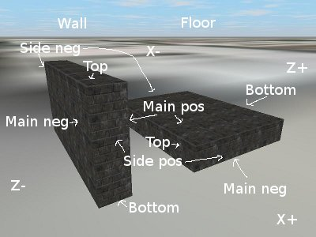

The Globals section contains the general information
about your building. This section is required, since it determines if a building file is valid. The section starts with this header:
<Globals>
and ends with this footer:
<EndGlobals>
Parameters are placed between those two markers, and look like
this:
Parameter =
value
Example:
Name = Triton Center
Parameters (all are optional):
1. Name - building name
Example: Name = My
Building
2. Designer - name of building's designer
Designer = Me
3. Location - location of the building
Location = 100 Main
Street
4. Description - Brief description of the
building
Description = A really average
building
5. Version - Version of the building (can be text)
Version = 1
6. CameraFloor - camera's starting floor, starting with 0
(like Floors command) - default is 0
CameraFloor = 0
7. CameraPosition - camera's starting position in X
(left/right) and Z (forward/backward) feet coordinates - default is "0, 0"
Syntax: CameraPosition =
X, Z
CameraPosition = 0,
-10
8. CameraDirection - specifies a 3D point that the camera is
looking at on startup (instead of specifying rotation), in X (left/right), Y
(up down), and Z (forward/backward) feet coordinates.
CameraDirection = 0, 10,
28.8
9. CameraRotation - axis rotation of the
camera on startup - X is degrees up/down, Y is degrees left/right, and Z is
spin. Default is "0, 0, 0", and the example makes the camera face right.
Syntax: CameraRotation =
X, Y, Z
CameraRotation = 0, 90,
0
10. Sky - which skybox texture pack to use, if
the Caelum sky system is off. In the following example, the chosen pack is
"noon", and the file "sky-noon.zip" will be loaded. Default is "noon".
Sky = noon
11. DynamicSky - which Caelum sky script to
use. In the following example, the script is "RainWind", which is listed in the
data/caelum/sky.os resource file. Default is "DefaultSky".
DynamicSky = RainWind
Available sky types
in data/caelum/sky.os file:
DefaultBase
DefaultSky
Cloudy
Overcast
BigPuffyStars
BigPuffyStarsWithFogComposer
MidnightSun
Eclipse
FogSky
RainWind
RainUp
ShadowDebug
HugeAmbientFactor
BasicCloud
OverrideCloud
CloudMesh
CloudFade
SkyDomeOverrideHazeTest
GroundFogNoise
SandStormTest
12. InterfloorOnTop - determines if the
interfloor area should be located at the bottom or top of each floor.
Interfloor areas represent the area used by floor trusses (supports), between a
level's ceiling and the next level. Since each floor needs supports below it,
the default is false.
InterfloorOnTop =
true
13. Collisions - enables/disables collisions
(default is true)
Collisions = false
14. Gravity - enables/disables gravity
(default is true)
Gravity = false
15. Coordinates - set latitude and longitude of building (for sky system)
Location = 41.883, -87.629
16. DateTime - set UTC date/time on startup (in Julian value), for sky system
DateTime = 2457197.1254
17. Position - set the 3D position of this building, used when loading multiple buildings. See the Load command in the Buildings section for more information.
Syntax: Position = X, Y, Z
Example: Position = 100, 0, 100
18. Rotation - set the 3D rotation (Y axis, which is left/right), in degrees, of this building, used when loading multiple buildings. See the Load command in the Buildings section for more information.
Syntax: Rotation = value
Example: Rotation = 90
19. Bounds - set the 3D boundaries of this building, which is only used if loading multiple buildings, and if this building is not the first (primary) building. If both Y values are 0, the Y values are set to be unlimited. See the Load command in the Buildings section for more information.
Syntax: Bounds = MinX, MinY, MinZ, MaxX, MaxY, MaxZ
Example: Bounds = -100, 0, -100, 100, 0, 100
The Textures section loads textures into the simulation and
assigns names to them, for use in the rest of the sections. The section starts
with this header:
<Textures>
and ends with this footer:
<EndTextures>
1. Load - loads a texture
Syntax: Load
filename, name, tile_x, tile_y[,
force]
Example: Load data\brick1.jpg,
Brick, 1, 1
This example will load the file brick.jpg and name it Brick. The values tile_x and tile_y are per-texture multipliers. For example, if you set tile_x to 2, and you specify a texture width (tw) of 2 during an AddFloor command later, the tiling value will be 4 (2 times 2), and the texture will be repeated 4 times horizontally. The force value is optional, and if set to false, autosizing will always be disabled for this texture; if set to true, autosizing will always be enabled.
2. LoadRange - loads a numeric range of
textures, and the current number is available in the number variable
(%number%)
Syntax: LoadRange
startnumber, endnumber, filename, name,
tile_x, tile_y[, force]
Example: LoadRange 2, 138,
data\floorindicators\%number%.jpg, Button%number%, 1, 1
This example will load the file 2.jpg and name it Button2, 3.jpg as Button3, and so on. The values tile_x and tile_y are per-texture multipliers. For example, if you set tile_x to 2, and you specify a texture width (tw) of 2 during an AddFloor command later, the tiling value will be 4 (2 times 2), and the texture will be repeated 4 times horizontally. The force value is optional, and if set to false, autosizing will always be disabled for this texture; if set to true, autosizing will always be enabled.
3.
LoadAnimated - loads a set of textures to use as a single animated
texture
Syntax: LoadAnimated
filename1, filename2, ..., name, duration, tile_x, tile_y[, force]
Example: LoadAnimated data/pic1.jpg, data/pic2.jpg, data/pic3.jpg, myanimation,
2, 1, 1
This example will load the files pic1.jpg, pic2.jpg and pic3.jpg and associate them with the texture material "myanimation". When "myanimation" is used, those three images will automatically be displayed in order, in a loop. Duration refers to the length of the animation in seconds. The values tile_x and tile_y are per-texture multipliers. For example, if you set tile_x to 2, and you specify a texture width (tw) of 2 during an AddFloor command later, the tiling value will be 4 (2 times 2), and the texture will be repeated 4 times horizontally. The force value is optional, and if set to false, autosizing will always be disabled for this texture; if set to true, autosizing will always be enabled.
4.
LoadAlphaBlend - loads a texture with a specular mask texture and
blending texture, used to make things like reflection effects
Syntax: LoadAlphaBlend
filename, specular_filename, blend_filename, name, spherical, tile_x,
tile_y[, force]
Example: LoadAlphaBlend data/windows.jpg, data/windows_spec.png, data/sky.jpg,
mywindows, true, 1, 1
This example will load the texture windows.jpg normally, and will load
windows_spec.png as a specular mask (which needs to be a file that contains an
alpha blended image that is used to determine how the blending texture applies
to the original texture), and loads a texture to blend as sky.jpg (see
Skyscraper's data folder for examples of this). The spherical
parameter determines if the texture is spherically mapped (true) or planar
mapped (false). The values tile_x and tile_y are per-texture
multipliers. For example, if you set tile_x to 2, and you specify a
texture width (tw) of 2 during an AddFloor command later, the tiling
value will be 4 (2 times 2), and the texture will be repeated 4 times
horizontally. The force value is optional, and if set to false,
autosizing will always be disabled for this texture; if set to true, autosizing
will always be enabled.
5.
LoadMaterial - loads a custom OGRE material, used for
advanced/specific texture definitions
Syntax: LoadMaterial
material_name, name, tile_x, tile_y[, force]
Example: LoadMaterial testmat, mycustommaterial, 1, 1
Material definitions (and their associated textures) are stored in
Skyscraper's data/materials folder, and are all automatically loaded on
startup. The material definitions (the example being testmat.material) contain
a material name along with the texture processing parameters. The material name
specified in this command needs to match the one in the material definition you
want to use; the example file is named "testmat". Name is the standard
texture name you want to map it to, to use with other commands. The other
commands are the same as in previous commands. For more information on how to
make material definition scripts, see the OGRE
manual's "Material Scripts" section.
6. AddText - draws text onto a texture - this
only creates a new texture during runtime (in memory), and all changes are lost
when the application shuts down
Syntax: AddText
texture_name, name, font_filename, font_size, text, x1, y1, x2, y2,
h_align, v_align, ColorR, ColorG, ColorB[, force]
Example: AddText Black,
Button100, nimbus_sans.ttf, 47, 100, -1, -1, -1, -1, center, center, 255, 255,
255
With this command, texture_name is the name of the previously loaded texture to draw text onto (loaded with either Load or LoadRange). Name is the name to call this new texture. Font_filename is the filename of the font to use - fonts are in Skyscraper's data/fonts directory. X1, y1, x2, and y2 are coordinate values mainly used to position the text in a boxed area, with the position of 0, 0 (x 0, y 0) being on the top left.. If any value is -1, the dimension of the texture will be used (so in this example, the loaded texture has a size of 128x128 pixels, and so the values are 0, 0, 128, 128). This will place the text in the center of the texture image, but to position it elsewhere, specify the pixel box to place it in. H_align and v_align determine the alignment of the text - for h_align, it can either be "left", "right" or "center", and for v_align either "top", "bottom" or "center". ColorR, ColorG and ColorB determine the color of the text, and the values range from 0 to 255. If all values are 255, the text is white, and if all values are 0, then it's black. The force value is optional, and if set to false, autosizing will always be disabled for this texture; if set to true, autosizing will always be enabled.
7. AddTextRange - similar to LoadRange, but
draws text onto a texture
Syntax: AddText
startnumber, endnumber, texture_name, name, font_filename, font_size, text,
x1, y1, x2, y2, h_align, v_align, ColorR, ColorG, ColorB[,
force]
Example: AddText 1, 100,
Black, Button%number%, nimbus_sans.ttf, 47, %number%, -1, -1, -1, -1, center,
center, 255, 255, 255
8. LoadCropped - loads a cropped image.
Syntax: LoadCropped
filename, name, x, y, width, height, tile_x, tile_y[,
force]
Example: LoadCropped
data\brick1.jpg, Brick2, 10, 10, 20, 20, 1, 1
This command is similar to the Load command, but loads only a portion of an image. In the above example, the command loads the file data\brick1.jpg as "Brick2", but only loads the portion of the image starting at pixel 10, 10, with a width of 20 pixels and a heigth of 20 pixels. Pixel 0, 0 is on the top left of the image. The force value is optional, and if set to false, autosizing will always be disabled for this texture; if set to true, autosizing will always be enabled.
9. AddOverlay - draws an image on top of
another image
Syntax: AddOverlay
texture_name, overlay_texture_name, name, x, y, width, height, tile_x,
tile_y[, force]
Example: AddOverlay
Brick1, Brick2, NewBrick, 25, 25, 50, 50, 1, 1
This command allows multiple textures to be combined into a single texture, by drawing one on top of the other. Texture_name specifies the original source texture name to use (all textures must be loaded beforehand), overlay_texture_name specifies the texture to draw on top of the source texture, and name specifies the name of the new texture. X and Y determine the position to place the top-left of the new image at (since position 0, 0 is the top left of the image), and width and height determine the size in pixels of the overlay texture. In the above example, the "Brick2" texture is drawn on top of the "Brick1" texture, starting at pixel position 25, 25, with a width of 50 and a height of 50. The resulting texture is called "NewBrick". The force value is optional, and if set to false, autosizing will always be disabled for this texture; if set to true, autosizing will always be enabled.
10. Rotate - sets a texture's rotation to a
set amount. This can be used with other texture modifiers.
Syntax: Rotate name,
angle
Example: Rotate
Brick1, 30
This command sets the texture's rotation value. In the example, the Brick1 texture's rotation is set to 30 degrees (clockwise).
11.
RotateAnim - applies rotation animation to a texture. This can be used
with other texture modifiers.
Syntax: RotateAnim name,
speed
Example: RotateAnim Brick1, 0.2
This command sets the texture's animated rotation value. Speed is in rotations per second. In the example, the Brick1 texture's rotation animation is set to 0.2 rotations per second.
12.
Scroll - set's a texture's fixed scrolling value. This can be used
with other texture modifiers.
Syntax: Scroll name,
x_offset, y_offset
Example: Scroll
Brick1, 0.5, 0.5
This command sets the texture's scrolling value. In the example, the Brick1 texture is shifted to the right halfway, and shifted up halfway.
13.
ScrollAnim - applies scrolling animation to a texture. This can be
used with other texture modifiers.
Syntax: ScrollAnim name,
x_speed, y_speed
Example: ScrollAnim Brick1, 1, 1
The speed values are the number of full scrolls per second. In the example, the Brick1 texture will scroll to the right once per second, and up once per second.
14.
Scale - sets a texture's scaling factor. This can be used with other
texture modifiers.
Syntax: Scale name,
x_scale, y_scale
Example: Scale
Brick1, 30
In the example, the Brick1 texture is scaled to half the size, in both width and height.
15.
Transform - sets an advanced transformation method on the texture.
This can be used with other texture modifiers, and also can be used multiple
times to create multiple transformations.
Syntax: Transform name,
type, wave_type, base, frequency, phase, amplitude
Example: Transform
Brick1, rotate, sine, 0.2, 0.2, 0.1, 1.0
This command applies an advanced transformation method on the texture. Type is the animation type modified, and can either be scroll_x, scroll_y, rotate, scale_x, or scale_y. Wave_type defines the type of waveform applied to the transformation, which creates a variable speed of the animation. The values are sine (a typical sine wave which smoothly loops between min and max values), triangle (an angled wave which increases & decreases at constant speed, changing instantly at the extremes), square (max for half the wavelength, min for the rest with instant transition between), sawtooth (gradual steady increase from min to max over the period with an instant return to min at the end), inverse_sawtooth (gradual steady decrease from max to min over the period, with an instant return to max at the end), or pwm (Pulse Width Modulation; like square, except the high to low transition is controlled by duty cycle). Base is the base value of the wave (base value, the minimum if amplitude > 0, the maximum if amplitude < 0), frequency is the number of wave iterations per second (speed), phase is the offset of the wave start, and amplitude is the size of the wave.
The Floor section can either be defined as a single floor,
using the Floor name, or as a range of floors, using the
Floors name.
For a single floor, the section would start with this:
<Floor
number>
and end with this:
<EndFloor>
For example, a floor section for a lobby would use this:
<Floor 0>
For multiple floors, the section would start with this:
<Floors start to
finish>
and end with this:
<EndFloors>
For example, to work with floors 5-10, you would type:
<Floors 5 to 10>
Or to work with basement floors -1 to -5, you would type:
<Floors -1 to -5>
Ranges in this can be specified in either direction. Floors above ground start with 0 (so a 15-story building would
have floors 0-14). Also, floors must be made in the proper order: basement
levels must be created in descending order (-1, -2, -3 etc), and
above-ground floors in ascending order (0, 1, 2, etc).
If floor 0 is created first, and then basement levels, floor -1's altitude will be adjusted based on floor 0's altitude; otherwise if floor -1 is created first, it's altitude will be the negative full height.
Variables:
%floor% - contains the current floor number
%height% - contains the current floor's
ceiling height
%interfloorheight% - contains the current
floor's interfloor height (spacing between floors)
%fullheight% - contains the current floor's
total height, including the interfloor height
%base%
- if the InterfloorOnTop parameter in the Globals section is set to 'false'
(the default), then Base refers to the floor's altitude plus interfloor height (slab height);
otherwise it's the floor's altitude
%floorname%
- the floor's name
%floorid%
- the floor's ID
%floortype%
- the floor's type
%description%
- the floor's description
Parameters:
1. Name - the name of the current floor,
required
Example: Name = Floor
%floor%
2. ID - the floor indicator name for the
current floor, such as L (for Lobby), LL (lower level), M (Mezzanine), etc.
This is also used to determine what texture should be loaded for the elevator
floor indicators and floor signs. The texture name would be "Button[ID]" - so
if the ID is 10, the texture name would be "Button10".
ID = %floor%
3. Type - the type of floor the current floor
is. The types are still being defined, but the currently used ones are
Basement, Lobby, Mezzanine, Conference, Office, Service, Skylobby, Hotel,
Apartment, Condominium, Restaurant, Observatory, Recreation, Ballroom,
Communications, and Roof. (Required)
Type = Office
4. Description - description of the current
floor, optional
Description =
Offices
5. Height - the floor-to-ceiling height of the
current floor, required
Height = 9.5
6. InterfloorHeight - the height in feet of
the space between floors (below each floor), starting at the floor's altitude,
and ending right below the level's floor; required.
InterfloorHeight =
2.24
7. Altitude - this parameter is optional and
is only recommended if the first level has an interfloor area that needs to be
below ground. If this parameter is not used, the altitude will be calculated
automatically.
Altitude = -2.24
8. Group - group floors together. This is a
list of comma-separated floor numbers (or a range specified with the - symbol)
that should be enabled along with this floor when the user arrives at this
floor. For example, if a 2-story room has a balcony, and the room base and
balcony are separate floors, you would specify the other floor's number in this
parameter.
Examples:
Group = 5
Group = 4, 5
Group = 4 - 10
Commands:
1. Exit - exits the current floor section
2. AddFloor - adds a textured floor with the
specified dimensions to the current floor/level
Syntax: AddFloor name,
texturename, thickness, x1, z1, x2,
z2, voffset1, voffset2, reverse_axis, texture_direction,
tw, th, isexternal
Example: AddFloor My Floor,
Brick, 0.5, -10, -10, 10, 10, 0, 0, False, False, 0, 0, False
Voffset1 and voffset2 are the height in feet above the current floor's base; tw and th are to size/tile the texture (0 lets the app autosize them), and isexternal determines if the floor is part of the building's external framework, or is part of the current floor (is either True or False). Name is a user-defined name for the object. The reverse_axis parameter reverses the axis that the difference in altitude/voffset for floors corresponds to. If this is false, and the altitude values are different, the floor will angle upward/downward along the Z axis (front/back), and if set to true, the floor will angle along the X axis (left/right). If texture_direction is false, the texture will be mapped horizontally on the floor; if true, it'll be mapped vertically. If isexternal is true, the voffset values are relative of the floor's altitude, not base.
3. AddWall - adds a textured wall with the
specified dimensions to the current floor/level
Syntax: AddWall name,
texturename, thickness, x1, z1, x2,
z2, height1, height2, voffset1,
voffset2, tw, th, isexternal
Example: AddWall My Wall,
Brick, 0.5, -10, -10, 10, 10, 10, 10, 0, 0, 0, 0, False
Height1 is the wall height in feet at the first coordinate set (x1 and z1), and height2 is for the second set (x2, and z2). Voffset1 is the vertical offset in feet (from the floor's base) for the first coordinate set, and voffset2 is for the second set. Tw and th are the texture sizing/tiling multipliers, and isexternal determines if the wall is part of the building's external framework (true) or if it's part of the current floor (false). If isexternal is true, the voffset values are relative of the floor's altitude, not base.
4. AddInterfloorFloor - adds a textured floor
below the floor of the current floor/level
Syntax: AddInterfloorFloor
name, texturename, thickness, x1, z1, x2,
z2, voffset1, voffset2, reverse_axis, texture_direction,
tw, th
Example: AddInterfloorFloor My
IFloor, Brick, 0.5, -10, -10, 10, 10, 0, 0, 0, 0
The parameters are the same as the AddFloor command, except the voffset values are the height offset in feet above the current floor's altitude, not above the base.
5. AddInterfloorWall - adds a textured wall
below the floor of the current floor/level
Syntax: AddInterfloorWall
name, texturename, thickness, x1, z1, x2,
z2, height1, height2, voffset1,
voffset2, tw, th
The parameters are the same as the AddWall command, and the voffset values are the same as the AddInterfloorFloor command.
6. AddShaftFloor - adds a textured floor to
the specified shaft, on the current floor
Syntax: AddShaftFloor
number, name, texturename, thickness, x1, z1,
x2, z2, voffset1, voffset2, reverse_axis,
texture_direction, tw, th
Example: AddShaftFloor 1, My
Floor, Brick, 0.5, -10, -10, 10, 10, 0, 0, false, false, 0, 0
The parameters are the same as the AddFloor command, and the number value is the shaft number to use. The x1, z1, x2, and z2 parameters are offsets of the shaft's origin (similar to creating elevator walls and floors)
7. AddShaftWall - adds a textured wall to the
specified shaft, on the current floor
Syntax: AddShaftWall
number, name, texturename, thickness, x1, z1,
x2, z2, height1, height2,
voffset1, voffset2, tw, th
The parameters are the same as the AddWall command, and the number value is the shaft number to use. Also, the x1, z1, x2, and z2 parameters are offsets of the shaft's origin (similar to creating elevator walls and floors)
8. AddStairsFloor - adds a textured floor to
the specified stairwell, on the current floor
Syntax: AddStairsFloor
number, name, texturename, thickness, x1, z1,
x2, z2, voffset1, voffset2, reverse_axis,
texture_direction, tw, th
Example: AddStairsFloor 1, My
Floor, Brick, 0.5, -10, -10, 10, 10, 0, 0, false, false, 0, 0
The parameters are the same as the AddFloor command, and the number value is the stairwell number to use
9. AddStairsWall - adds a textured wall to the
specified stairwell, on the current floor
Syntax: AddStairsWall
number, name, texturename, thickness, x1, z1,
x2, z2, height1, height2,
voffset1, voffset2, tw, th
The parameters are the same as the AddWall command, and the number value is the stairwell number to use. Also, the x1, z1, x2, and z2 parameters are offsets of the stairwell's origin (similar to creating elevator walls and floors)
10. ColumnWallBox - creates 4 walls (box) at
the specified coordinate locations, as part of the current floor's columnframe
mesh
Syntax: ColumnWallBox
name, texturename, x1, x2, z1, z2,
height, voffset, tw, th, inside, outside, top,
bottom
Example: ColumnWallBox My Box,
Brick, -10, 10, -10, 10, 15, 0, 0, 0, true, true, true, true
For parameter information, see the CreateWallBox command above. In this command, the default voffset is the floor's altitude.
11. ColumnWallBox2 - creates 4 walls (box) at
a specified central location, as part of the current floor's columnframe mesh
Syntax: ColumnWallBox2
name, texturename, centerx, centerz,
widthx, lengthz, height, voffset,
tw, th, inside, outside, top, bottom
Example: ColumnWallBox2 My
Box, Brick, 0, 0, 10, 10, 15, 0, 0, 0, false, true, false, false
For parameter information, see the CreateWallBox2 command above. In this command, the default voffset is the floor's altitude.
12. CallButtonElevators - comma-separated list
of elevators the next created call button set will work with (this must be
specified before CreateCallButtons)
Example: CallButtonElevators =
1, 2, 3, 4
13. CreateCallButtons - creates a call button
set
Syntax: CreateCallButtons
Sound, BackTexture, UpButtonTexture, UpButtonTexture_Lit,
DownButtonTexture, DownButtonTexture_Lit, CenterX, CenterZ, voffset, direction,
BackWidth, BackHeight, ShowBack, tw, th
Example: CreateCallButtons switch.wav, Marble, CallButtonsUp, CallButtonsUpLit,
CallButtonsDown, CallButtonsDownLit, -10, 0, 4, right, 0.5, 1, true, 1,
1
Sound is the filename of the sound to play when the call buttons are pressed
BackTexture is the texture of the wall plate behind the buttons
UpButtonTexture and DownButtonTexture are the textures used for the buttons themselves (unlit). UpButtonTexture_Lit and DownButtonTexture_Lit specify the lit button textures.
CenterX and CenterZ are the central location of the call button set object
voffset is the altitude offset that the object is above each floor
direction determines the direction the call buttons
face:
'front' means they face towards the front of the building
'back' means they face towards the back of the building
'left' means they face left
'right' means they face right
BackWidth and BackHeight are the width and height of the wall plate
ShowBack determines if the wall plate should be shown, and is either true or false
tw and th are the texture scaling for the wall plate.
The up and down buttons will be automatically created based on the combined range of the elevators specified with the CallButtonElevators command (above).
14. AddStairs - creates a custom staircase at
the specified location.
Syntax: AddStairs number,
name, texture, direction, CenterX, CenterZ, width, risersize, treadsize,
num_stairs, voffset, tw, th
Example: AddStairs 1,
TestStairs, Brick, left, 10, 15, 5, 0.5, 0.5, 10, 0, 0, 0
The direction parameter specifies the direction the staircase faces (where the bottom step is), and so if a staircase goes up from left to right, the direction would be left. Width specifies the step width; risersize specifies the height of each step riser (vertical portion); treadsize specifies the length of each step tread/run (horizontal portion); num_stairs specifies the total number of steps to create (including the above landing platform, but not including the base platform). To calculate the length of the staircase, multiply (num_stairs - 1) with treadsize; in the above example, that would be 9 * 0.5. To determine the height of the staircase, multiply num_stairs with risersize. Note that the tread of the top step is not drawn (the top step is the landing platform); therefore for a staircase containing 10 steps, the total staircase width would be comprised of 9 treads (which is why the length calculation used num_stairs minus 1).
15. AddDoor - adds a textured door in the
specified location, and performs a wall cut on that area (this must be called
after the associated wall is created)
Syntax: AddDoor opensound,
closesound, open, texturename, thickness, direction, speed,
CenterX, CenterZ, width, height,
voffset, tw, th
Example: AddDoor
, , False, DoorTexture, 0.2, 1, 0, -8.5, 0, 3.5, 8, 0, 1, 1
Direction specifies the direction the door faces (the
side in which the handle is on the left) and also the direction it opens. These
are the values:
1 - faces left, opens left
2 - faces left, opens right
3 - faces right, opens right
4 - faces right, opens left
5 - faces front, opens front
6 - faces front, opens back
7 - faces back, opens back
8 - faces back, opens front
The default door speed is 75; you can also specify 0 for the
speed to use the system default. The open parameter determines if the
door should be opened on start; default is false. Leave the sound fields blank
for no sounds to be played.
16. AddStairsDoor - adds a textured door for
the specified stairwell, in a location relative to the stairwell's center. This
also performs a wall cut on that area (this must be called after the associated
wall is created)
Syntax: AddStairsDoor
number, opensound, closesound, open, texturename, thickness,
direction, speed, CenterX, CenterZ, width,
height, voffset, tw, th
Number specifies the stairwell number. Direction specifies the direction the door faces and also the direction it opens. For values of this, look at the AddDoor command above. Leave the sound fields blank for no sounds to be played.
17.
AddShaftStdDoor - adds a standard textured door for the specified
shaft, in a location relative to the shaft's center. This also performs a wall
cut on that area (this must be called after the associated wall is created).
This shouldn't be confused with the AddShaftDoor command, which creates
elevator shaft doors.
Syntax: AddShaftStdDoor
number, opensound, closesound, open, texturename, thickness,
direction, speed, CenterX, CenterZ, width,
height, voffset, tw, th
Number specifies the shaft number. Direction specifies the
direction the door faces and also the direction it opens. For values of this,
look at the AddDoor command above. Leave the sound fields blank for no
sounds to be played.
18. AddExternalDoor - same as the AddDoor command,
but creates an external (global) door that is always visible. With this command,
the voffset parameter is relative of the floor's altitude, not base.
Syntax: AddExternalDoor opensound,
closesound, open, texturename, thickness, direction, speed,
CenterX, CenterZ, width, height,
voffset, tw, th
Example: AddExternalDoor
, , False, DoorTexture, 0.2, 1, 0, -8.5, 0, 3.5, 8, 0, 1, 1
19. AddDirectionalIndicator - creates a single
elevator directional indicator/lantern on the current floor (similar to the
CreateCallButtons command)
Syntax: AddDirectionalIndicator Elevator:Car, Relative, ActiveDirection,
Single, Vertical, BackTexture, UpTexture, UpTextureLit,
DownTexture, DownTextureLit, CenterX, CenterZ, voffset, direction, BackWidth,
BackHeight, ShowBack, tw, th
Example: AddDirectionalIndicator 1, true, false, false, true, Metal,
UpLight, UpLightOn, DownLight, DownLightOn, -3, -4.162, 6, front, 0.5, 1, true,
0, 0
This command will create a directional indicator on the current floor (if ActiveDirection is false, then it'll only create it if the elevator serves that floor). It'll also automatically create the up and down lights depending on the floor.
Elevator:Car specifies the elevator and car to create the indicators for. The car value is optional, and if left out, the first car will be used. For example, values can be "1" for Elevator 1 (uses Car 1), or "1:1" for Elevator 1 Car 1.
Relative determines if the X and Z coordinates are relative to the elevator's origin (center) or not.
ActiveDirection determines if the indicator should continuously display the active elevator direction (true), or if it should show the elevator's direction for the current call (false, default)
Single determines if a single indicator light should be created instead of two. If this is true, the unlit texture is specified in UpLight, and the DownLight value is ignored.
Vertical determines if the two lights should be vertically separated (true), or horizontally separated (false)
BackTexture is the texture of the wall plate behind the lights
UpTexture and DownTexture are the textures used for the lights themselves, and the "Lit" texures are the ones to show when the light is on. DownTexture is ignored if Single is true.
CenterX and CenterZ are the central location of the indicators
voffset is the altitude offset that the object is above each floor
direction determines the direction the indicators
face:
'front' means they face towards the front of the building
'back' means they face towards the back of the building
'left' means they face left
'right' means they face right
BackWidth and BackHeight are the width and height of the wall plate
ShowBack determines if the wall plate should be shown, and is either true or false
tw and th are the texture scaling for the wall plate.
20. AddShaftDoor - creates shaft elevator
doors on the current floor only
Syntax: AddShaftDoor elevator, number, lefttexture, righttexture,
thickness, CenterX, CenterZ, voffset, tw, th
Syntax (with old SetShaftDoors command): AddShaftDoor elevator, number,
lefttexture, righttexture, tw, th
The AddShaftDoor command creates working shaft elevator doors on the current floor only - the other command, AddShaftDoors (in the elevator section) creates all shaft doors in a single command. This command is useful for specifying different textures for shaft doors depending on the floor, and also for only creating shaft doors on one side if an elevator serves a specific floor. The SetShaftDoors command in the elevator section must be used before using this command. Parameters such as width, height, and direction are taken from the AddDoors command (so the regular elevator doors need to be created first). The voffset parameter allows you to create shaft doors at a different vertical position than the base of the floor, and the elevator will automatically stop according to the shaft door's voffset for that floor. These doors should be moved slightly away from the elevator doors (to separate them both). Also, this command cuts any shaft walls that are within the door area (and so this must be called after the shaft walls are created). Number specifies the number of the door to create (related to the Doors command) - if the elevator only has one door, or if the Doors command was not used, specify 1 here.
21. AddFloorIndicator - creates a floor
indicator associated with a specific elevator
Syntax: AddFloorIndicator elevator:car, relative, texture_prefix, direction,
CenterX, CenterZ, width, height, voffset
The AddFloorIndicator command creates a floor indicator at the position specified by CenterX and CenterZ, associated with the elevator and car specified by elevator:car (see the AddDirectionalIndicator command). Direction is the direction the indicator faces, and can be either "left", "right", "front" or "back". Relative determines if the CenterX and CenterZ values are relative of the elevator's center or not. This command can be given multiple times to create multiple indicators. Texture_prefix is the base name of the texture to load when displaying a floor ID; for example if the indicator is on floor 3, and you specify a prefix of "Button", it'll load the "Button3" texture.
22. Cut - performs a manual box cut on an area
within the current floor
Syntax: Cut x1, y1, z1,
x2, y2, z2, cutwalls, cutfloors
Example: Cut -5, -5,
-5, 5, 5, 5, false, true
The x, y and z values specify the start and end coordinates of the box cut. The Y values are relative to the current floor's altitude. If cutwalls is true, the function will cut walls; if cutfloors is true, it'll cut floors.
23. CutAll - performs a manual box cut on all
objects associated with the current floor (the level itself, interfloor,
shafts, stairs and external)
Syntax: CutAll x1, y1, z1,
x2, y2, z2, cutwalls, cutfloors
Example: CutAll -5, -5,
-5, 5, 5, 5, false, true
The x, y and z values specify the start and end coordinates of the box cut. The Y values are relative to the current floor's altitude. If cutwalls is true, the function will cut walls; if cutfloors is true, it'll cut floors.
24. AddFillerWalls - helper function to add
fillers around a door's cut location. When a door is created, the wall in it's
location is cut to provide space; after the cut, the sides are open (if the
wall has thickness) - this creates a covering wall on each side and a floor
above the door frame to fill the area.
Syntax: AddFillerWalls
texture, thickness, CenterX, CenterZ, width, height, voffset, direction,
tw, th, isexternal
Example: AddFillerWalls
ConnectionWall, 0.5, -10, 0, 3.5, 8, 0, true, 0, 0, false
The parameters in this function are similar to the related
door's parameters. Direction is either true if the door faces the
front/back (width is along the X axis), or false if the door faces left/right
(width is along the Z axis).
The isexternal parameter is the same as with the AddWall command, and
if it is true, the voffset value is relative of the floor's altitude, not base.
25. AddSound - creates a user-defined sound at
the specified position
Syntax: AddSound name,
filename, x, y, z, loop[, volume, speed, min_distance, max_distance,
doppler_level, cone_inside_angle, cone_outside_angle, cone_outside_volume,
direction_x, direction_y, direction_z]
Example 1: AddSound MySound,
sound.wav, 10, 100, 5, true
Example 2: AddSound
MySound, sound.wav, 10, 100, 5, true, 1, 100, 1, -1, 0, 360, 360, 1, 0, 0,
0
For information on the parameters, see the AddSound command in the Global Commands section. The only difference here is that the Y value is relative of the floor's base (altitude plus interfloor height). Loop specifies if the sound should loop and play on startup.
26. AddShaftDoorComponent - creates a single
shaft door component, used for creating custom door styles
Syntax: AddShaftDoorComponent
elevator, number, name, texture, sidetexture, thickness, direction,
openspeed, closespeed, x1, z1, x2, z2, height, voffset, tw, th, side_tw,
side_th
This command is almost identical to the AddDoorComponent command (in the elevator section below - see that for more information), except that it creates shaft doors. Use the FinishShaftDoor command after creating the components. The components don't need to line up with the floor's base; the elevator will automatically stop at the base of the shaft door for each floor. This command replaces the AddShaftDoor command.
27. FinishShaftDoor - finishes shaft door
creation - use this after all related AddShaftDoorComponent commands are used,
or specify it without the AddShaftDoorComponent commands if you're creating a
manual shaft door.
Syntax: FinishShaftDoor elevator, number[, door_walls, track_walls]
This command is almost identical to the FinishDoors command (in the elevator section below - see that for more information) except that it's used for finishing a shaft door.
28.
AddModel - adds a 3D model to the floor. If a filename is specified, the model's
textures/materials must be defined in a separate ".material" file, and a
separate collider mesh ".collider" will be loaded. In that situation, if a collider mesh isn't
available, a simple box collider will be created. If a filename is not specified, this command will create a new empty model, where it's name can be used as the destobject parameter in other commands (in the related Floor section), and a collider will be automatically created.
Syntax: AddModel name,
filename, center, CenterX, CenterY, CenterZ, RotationX, RotationY, RotationZ,
MaxRenderDistance, ScaleMultiplier, EnablePhysics, Restitution, Friction,
Mass
Example 1: AddModel
MyModel, cube.mesh, true, 0, 0, 0, 0, 0, 0, 0, 1, false, 0, 0, 0
Example 2: AddModel MyModel,
cube.mesh, true, 0, 0, 0, 0, 0, 0, 0, 1, true, 0.1, 0.5, 0.1
Example 3: AddModel MyModel,
, false, 0, 0, 0, 0, 0, 0, 0, 1, true, 0.1, 0.5, 0.1
The Center value is either true or false, and determines if the loaded model should be automatically centered, otherwise the exact mesh positioning in the model file will be used. The CenterY value is relative to the current floor's base. MaxRenderDistance determines the maximum distance in feet that the object will be shown (0 means unlimited). ScaleMultiplier allows you to change the size of the object during the load - for example, set to 2 to double the size. Model files are in the OGRE native mesh format. In the example, the material/texture file is cube.material, and the optional collider mesh file is cube.collider. EnablePhysics enables Bullet physics on the object (physics will only work if you don't provide a collider mesh), and Restitution, Friction and Mass determine the physical properties of the object.
29. AddStairsModel - adds a 3D model to the
specified stairwell, on the current floor. See the AddModel command above for
parameter information.
Syntax: AddStairsModel number, name, filename, center, CenterX, CenterY,
CenterZ, RotationX, RotationY, RotationZ, MaxRenderDistance, ScaleMultiplier,
EnablePhysics, Restitution, Friction, Mass
Example: AddModel
1, MyModel, cube.mesh, true, 0, 0, 0, 0, 0, 0, 0, 1, false, 0, 0, 0
The CenterY value is relative to the current floor's altitude.
30. AddShaftModel - adds a 3D model to the
specified shaft, on the current floor. See the AddModel command above for
parameter information.
Syntax: AddShaftModel number, name, filename, center, CenterX, CenterY,
CenterZ, RotationX, RotationY, RotationZ, MaxRenderDistance, ScaleMultiplier,
EnablePhysics, Restitution, Friction, Mass
Example: AddModel
1, MyModel, cube.mesh, true, 0, 0, 0, 0, 0, 0, 0, 1, false, 0, 0, 0
The CenterY value is relative to the current floor's altitude.
31.
AddActionControl - creates a custom control that uses a specific
action defined by AddAction.
Syntax: AddActionControl
name, sound, direction, centerx, centerz, width, height, voffset,
action_name(s), texture_name(s)
Example: AddActionControl MyControl, switch.wav, front, -10, 10, 1.5, 1.5, 4,
UndoMyAction, MyAction, Touch, TouchLit
AddActionControl command creates an advanced control similar to elevator button
panel controls, but assigned to an action created with the AddAction command.
The action_name(s) and texture_name(s) parameters allow you
to specify a list of actions, and a list of textures to go along with those
actions. There needs to be a texture for every action; if you specify 3 actions
and only 2 textures, you will get an error. The control starts up in the first
action, and switches to the next actions in sequence when it's clicked.
Direction is the direction the control itself will face in 3D space
(front, left, right, back). Voffset is relative of the floor's base.
Leave the sound field blank for no sound to be played.
32.
AddShaftActionControl - creates a custom control in a specified shaft
that uses a specific action defined by AddAction.
Syntax: AddShaftActionControl
number, name, sound, direction, centerx, centerz, width, height, voffset,
action_name(s), texture_name(s)
Example: AddShaftActionControl 1, MyControl, switch.wav, front, -10, 10, 1.5,
1.5, 4, UndoMyAction, MyAction, Touch, TouchLit
This command creates an advanced control similar to elevator button panel
controls, but assigned to an action created with the AddAction command. The
action_name(s) and texture_name(s) parameters allow you to
specify a list of actions, and a list of textures to go along with those
actions. There needs to be a texture for every action; if you specify 3 actions
and only 2 textures, you will get an error. The control starts up in the first
action, and switches to the next actions in sequence when it's clicked.
Direction is the direction the control itself will face in 3D space
(front, left, right, back). Voffset is relative of the floor's base.
Leave the sound field blank for no sound to be
played.
33.
AddStairsActionControl - creates a custom control in a specified
stairwell that uses a specific action defined by AddAction.
Syntax: AddStairsActionControl
number, name, sound, direction, centerx, centerz, width, height, voffset,
action_name(s), texture_name(s)
Example: AddStairsActionControl 1, MyControl, switch.wav, front, -10, 10, 1.5,
1.5, 4, UndoMyAction, MyAction, Touch, TouchLit
This command creates an advanced control similar to elevator button panel
controls, but assigned to an action created with the AddAction command. The
action_name(s) and texture_name(s) parameters allow you to
specify a list of actions, and a list of textures to go along with those
actions. There needs to be a texture for every action; if you specify 3 actions
and only 2 textures, you will get an error. The control starts up in the first
action, and switches to the next actions in sequence when it's clicked.
Direction is the direction the control itself will face in 3D space
(front, left, right, back). Voffset is relative of the floor's base.
Leave the sound field blank for no sound to be
played.
34.
AddTrigger - creates a trigger that is used to signal an action when
the user's camera enters or leaves the defined area.
Syntax: AddTrigger name,
sound, start_x, start_y, start_z, end_x, end_y, end_z, action_names(s)
Example: AddTrigger MyTrigger, switch.wav, -30, 0, -30, -20, 10, -20,
UndoMyAction, MyAction
AddTrigger creates a trigger similar to action controls (AddActionControl) and
elevator controls. The action_names(s) parameter allows you to specify
a list of actions that this trigger will call when the camera enters or exits
the area. The trigger starts in the first action, and will switch to each
consecutive action when the users enters/leaves. The X, Y and
Z parameters specify the 3D box that defines the trigger area. Y is
relative of the floor's base. Leave the sound field blank for no sound
to be played.
The Elevator section allows you to create elevators for your building. Elevators are numbered, starting with 1. Parameters that have defaults listed are optional.
Each elevator is created with a single default car, Car 1. Car-specific parameters and commands are listed in the Car section, but can also be specified in this section, if an elevator only has a single car, or if you're referring to Car 1.
The section headers and footers are similar to the ones in the
Floor section.
To specify a single elevator, you would type something like:
<Elevator 1>
and end it with:
<EndElevator>
For a range of elevators, you would use something like:
<Elevators 2 to
10>
and end with:
<EndElevators>
Variables:
%elevator% - number of the current elevator
Parameters:
1. Name - sets the name of the elevator
Example: Name = Service
Elevator
2. Type - sets the type of the elevator. Available types are "Local" for a standard local passenger elevator (the default), "Express" for an express elevator, "Service" for a service elevator, and "Freight" for a freight elevator.
Example: Type = Express
3. Speed - maximum speed of the elevator, in
feet per second
Example: Speed = 20
4. Acceleration - acceleration speed of the
elevator, in feet per second
Example: Acceleration =
0.015
5. Deceleration - deceleration speed of the
elevator, in feet per second
Example: Deceleration =
0.0075
6. AssignedShaft - the shaft number this
elevator is in
Example: AssignedShaft =
1
7. MotorStartSound, MotorUpStartSound,
MotorDownStartSound - the sound file to play when the elevator motor
starts moving/speeds up (sets both directions). Default is
elevstart.wav. Leave the filename field blank for no sound. The first
command specifies both up and down sounds, while the others are for either
upwards movement or downwards movement.
Example: MotorStartSound =
start.wav
8. MotorRunSound, MotorUpRunSound,
MotorDownRunSound - the sound file to play while the elevator motor is
running (sets both directions). This file is automatically looped by the
simulator. Default is elevmove.wav. Leave the filename field blank for
no sound. The first command specifies both up and down sounds, while the others
are for either upwards movement or downwards movement.
Example: MotorRunSound =
run.wav
9. MotorStopSound, MotorUpStopSound,
MotorDownStopSound - the sound file to play when the elevator motor
slows down and stops (sets both directions). Default is elevstop.wav.
Leave the filename field blank for no sound. The first command specifies both
up and down sounds, while the others are for either upwards movement or
downwards movement.
Example: MotorStopSound =
stop.wav
10. MotorIdleSound - the sound file to play
when the elevator motor is idling. There is no default yet. Leave the filename
field blank for no sound.
Example: MotorIdleSound =
idle.wav
11. FloorSkipText - sets the text that will be
shown in the floor indicator when passing non-serviced floors. The texture for
this must be loaded for it to show (and will start with the related indicator's
texture prefix) - of you set this to EX for example, and the indicator's
texture prefix is "Button", the texture it'll load will be ButtonEX.jpg. Common
values for this are EZ, X, and EX (which stand for Express Zone).
Example: FloorSkipText = EZ
12. RecallFloor - sets the floor the elevator
will recall to during fire service phase 1 mode. Default is the lowest serviced
floor.
Example: RecallFloor =
5
13. AlternateRecallFloor - sets the alternate
floor the elevator will recall to during fire service phase 1 mode. Default is
the highest serviced floor.
Example: AlternateRecallFloor
= 6
14. ACP - enables ACP (Anti-Crime Protection)
mode
Example: ACP = true
15. ACPFloor - sets the floor the elevator
will stop at while in ACP mode. Default is the lowest serviced floor.
Example: ACPFloor =
5
16. MotorPosition - sets the position of the
motor sound emitter; if this command is not specified, it'll be placed at the
base (altitude + interfloor) of the highest floor in the corresponding shaft.
The X and Z values are relative of the elevator center.
Syntax: MotorPosition = x,
y, z
Example: MotorPosition
= 0, 100, 0
17. QueueResets - set this to true if you want
the elevator to reset the related queue (up or down) after it reaches the last
valid entry. If the elevator is moving up for example with this setting on, and
you press buttons for floors below you, the elevator will remove those entries
after it reaches the highest selected floor. The elevator will only be
available for hall calls in the active queue direction.
Example: QueueResets =
true
18. LimitQueue - set this to true to only
allow floor selections in the same direction as the active elevator queue
direction to be placed. For example, if the elevator is moving up, and a button
is pressed for a lower floor, this will prevent that from being queued. The
elevator will only be available for hall calls in the active queue
direction.
Example: LimitQueue =
true
19. UpPeak - enables up peak mode for this
elevator.
Example: UpPeak =
true
20. DownPeak - enables down peak mode for this
elevator.
Example: DownPeak =
true
21. IndependentService - enables independent
service mode for this elevator.
Example: IndependentService =
true
22. InspectionService - enables inspection
service mode for this elevator.
Example: InspectionService =
true
23.
InspectionSpeed - speed multiplier for inspection service (if set to
0.6, would be 60% of elevator speed)
Syntax: InspectionSpeed =
multiplier
24.
Parking - enables automatic elevator parking. If this option is used,
the elevator will automatically send itself to the specified parking floor
after the number of seconds specified in delay.
Syntax: Parking = floor,
delay
25. LevelingSpeed - elevator's leveling speed.
Default is 0.2
Syntax: LevelingSpeed =
speed
26. LevelingOffset - distance in feet from the
destination floor that the elevator will switch into leveling mode. Default is
0.5
Syntax: LevelingOffset =
distance
27. LevelingOpen - distance in feet from the
destination floor that the elevator will open the doors. Default is 0.
Syntax: LevelingOpen =
distance
28. NotifyEarly - changes behavior of arrival
notifications (chime, lighting of directional indicator, and floor announcement
sound). 0 is the default and notifies when the elevator stops on the floor. 1
notifies when the elevator starts the leveling process, and 2 notifies when the
elevator starts decelerating.
Syntax: NotifyEarly =
value
29. DepartureDelay - sets the time in seconds
that the elevator waits before proceeding to the next floor. Default is 0.
Syntax: DepartureDelay =
1
30. ArrivalDelay - sets the time in seconds
that the elevator waits before opening the doors after arriving at a floor. The
default is 0. Note that a value greater than 0 will switch off the LevelingOpen
setting.
Syntax: ArrivalDelay =
0.5
31. FireService1 - sets the fire service phase
1 mode that the elevator will start with. Default is 0. Values are 0 for off, 1
for on, 2 for bypass.
Syntax: FireService1 =
2
32. FireService2 - sets the fire service phase
2 mode that the elevator will start with. Default is 0. Values are 0 for off, 1
for on, 2 for hold.
Syntax: FireService2 =
1
33.
AutoDoors - if this is set to true, the elevator doors will
automatically open if instructed (for example, when arriving at a floor), and
will refuse to open if between floors. Set to false for manual elevators. The
default is true.
Syntax: AutoDoors =
false
34.
OpenOnStart - if this is set to true, the elevator doors will
automatically open on startup. The default is false.
Syntax: OpenOnStart =
false
35.
Interlocks - if this is set to true, the elevator doors will remain
locked while the elevator is moving, will refuse to open unless the elevator is
within a landing zone, and the elevator will not move unless the doors are
closed. The default is true.
Syntax: Interlocks =
false
36.
FloorHold - if this is set to true, the user must hold down the floor
button in order to move to the desired floor. When the button is released, the
elevator will immediately stop. This is used to mimic a modern manual elevator
(platform lift). The default is false.
Syntax: FloorHold =
true
37. MotorEmergencyStopSound - the sound file to play
for the elevator motor when an emergency stop is initiated.
Leave the filename field blank to use the normal motor stop sound, if specified.
The default is emergstop.wav
Example: MotorEmergencyStopSound =
emergstop.wav
38. EmergencyStopSpeed - the speed multiplier to
use for an emergency stop. A value of 3, the default, would mean 3 times the
normal deceleration rate.
Example: EmergencyStopSpeed =
2.5
39. ChimeOnArrival - if set to true, the elevator
will always chime when arriving to a floor. If false (the default), the elevator
will only chime when responding to a hall call.
Example: ChimeOnArrival =
true
Commands:
1. CreateElevator - creates an elevator at the
specified location
Syntax: CreateElevator
relative, x, z, floor
Example:
CreateElevator false, 0, 10, 0
Relative determines if the coordinates are relative to the shaft center, or if they're absolute, X and Z are the coordinates to place the center of the elevator at, and Floor is the floor to place the elevator on.
In order to support multi-deck elevators, each elevator car can be defined separately. The Car section is a subsection of the Elevator section, and allows you to create additional cars for your elevator. These are also numbered, starting with 1. Parameters that have defaults listed are optional.
To create additional cars, this section is normally placed right after the elevator's CreateElevator command.
The section headers and footers are similar to the ones in the
Elevator section.
To specify a single car, you would type something like:
<Car 2>
and end it with:
<EndCar>
For a range of elevators, you would use something like:
<Cars 1 to
2>
and end with:
<EndCars>
Variables:
%elevator% - number of the current elevator
%car% - number of the current car
Parameters:
1. Name - sets the name of the car
Example: Name = Lower Car
2. OpenSpeed - open/close speed of the
elevator doors. This must be specified after the CreateCar command.
Syntax: OpenSpeed
doornumber = value
Example: OpenSpeed 1 =
0.2
3. SlowSpeed - open/close speed multiplier of
the elevator doors used for slow movement, usually nudge mode. The default is
0.5, which ends up being half of the door's speed value. This must be specified
after the CreateCar command.
Syntax: SlowSpeed
doornumber = value
Example: SlowSpeed 1 =
0.2
4. ManualSpeed - open/close speed multiplier
of the elevator doors used for manual movement. The default is 0.2. This must
be specified after the CreateCar command.
Syntax: ManualSpeed
doornumber = value
Example: ManualSpeed 1 =
0.2
5. ServicedFloors - a comma-separated list of
floors this elevator car services. Ranges can also be specified by putting a "-"
between the numbers. Please note that each car must serve different floors.
Example: ServicedFloors = 0,
5, 6, 7-30, 31
6. DoorTimer - the length of time (in
milliseconds) that the elevator doors should stay open before automatically
closing. Specify 0 to disable. The default is 5000, or 5 seconds. This must be
specified after the CreateCar command.
Syntax: DoorTimer
doornumber = value
Example: DoorTimer 1 =
10000
7. QuickClose - the length of time (in
milliseconds) that the elevator doors should stay open before automatically
closing, in quick-close mode. Specify 0 to disable. The default is 3000, or 3
seconds. This must be specified after the CreateCar command.
Syntax: QuickClose
doornumber = value
Example: QuickClose 1 =
10000
8. NudgeTimer - the length of time (in
seconds) that the doors have to remain open before the elevator activates nudge
mode for the related door. Specify 0 to disable. The default is 30 seconds.
This must be specified after the CreateCar command.
Syntax: NudgeTimer
doornumber = value
Example: NudgeTimer 1 =
10
9. OpenSound - the sound file to play when
the elevator doors open. Default is elevatoropen.wav. Leave the
filename field blank for no sound. This must be specified after the
CreateCar command.
Syntax: OpenSound
doornumber = filename
Example: OpenSound 1 =
open.wav
10. CloseSound - the sound file to play when
the elevator doors close. Default is elevatorclose.wav. Leave the
filename field blank for no sound. This must be specified after the
CreateCar command.
Syntax: CloseSound
doornumber = filename
Example: CloseSound 1 =
close.wav
11. CarStartSound, CarUpStartSound,
CarDownStartSound - the sound file to play when the elevator starts
moving/speeds up. Leave the filename field blank for no sound. By default no
sound is played. The first command specifies both up and down sounds, while the
others are for either upwards movement or downwards movement.
Example: CarStartSound =
start.wav
12. CarMoveSound, CarUpMoveSound,
CarDownMoveSound - the sound file to play while the elevator is
moving. This file is automatically looped by the simulator. By default no sound
is played. Leave the filename field blank for no sound. The first command
specifies both up and down sounds, while the others are for either upwards
movement or downwards movement.
Example: CarMoveSound =
move.wav
13. CarStopSound, CarUpStopSound,
CarDownStopSound - the sound file to play when the elevator slows down
and stops. By default no sound is played. Leave the filename field blank for no
sound. The first command specifies both up and down sounds, while the others
are for either upwards movement or downwards movement.
Example: CarStopSound =
stop.wav
14. CarIdleSound - the sound file to play when
the elevator is idle (generally the fan sound). Default is
elevidle.wav. Leave the filename field blank for no sound.
Example: CarIdleSound =
idle.wav
15. ChimeSound - the sound file to play when
the elevator arrives at a floor. Default is chime1.wav. This must be
specified after the CreateCar command. This is used for both up and down
chimes. Leave the filename field blank for no sound.
Syntax: ChimeSound
doornumber = filename
Example: ChimeSound 1 =
chime.wav
16. UpChimeSound - the sound file to play when
the elevator arrives at a floor and it's direction is up. Default is
chime1.wav. Leave the filename field blank for no sound. This must be
specified after the CreateCar command.
Syntax: UpChimeSound
doornumber = filename
Example: UpChimeSound 1 =
chime.wav
17. DownChimeSound - the sound file to play
when the elevator arrives at a floor and it's direction is down. Default is
chime1.wav. Leave the filename field blank for no sound. This must be
specified after the CreateCar command.
Syntax: DownChimeSound
doornumber = filename
Example: DownChimeSound 1 =
chime.wav
18. AlarmSound - the sound file to play when
the elevator alarm button is pressed. Default is bell1.wav. Leave the
filename field blank for no sound.
Example: AlarmSound =
bell2.wav
19. AlarmSoundStop - the sound file to play
when the elevator alarm button is released. Leave the filename field blank for
no sound. Default is bell1-stop.wav.
Example: AlarmSoundStop =
bell2-stop.wav
20. BeepSound - the sound file to play when
the elevator reaches a new floor. There is no default; if this is set, the
beeps will be automatically enabled. If an asterisk (*) is specified, it is
replaced with the current floor number.
Example: BeepSound =
beep.wav
21. FloorSound - the sound file(s) to play
when the elevator arrives at a floor; normally this is used for files that
speak the floor number. There is no default; if this is set, the sounds will be
automatically enabled. If an asterisk (*) is specified, it is replaced with the
current floor number.
Example: FloorSound =
floor*.wav
22. UpMessage - the notification sound file(s)
to play after the elevator arrives at a floor and the doors open - this tells
the passengers that the elevator is going up. There is no default; if this is
set, the sound will be automatically enabled. If an asterisk (*) is specified,
it is replaced with the current floor number.
Example: UpMessage =
goingup.wav
23. DownMessage - the notification sound
file(s) to play after the elevator arrives at a floor and the doors open - this
tells the passengers that the elevator is going down. There is no default; if
this is set, the sound will be automatically enabled. If an asterisk (*) is
specified, it is replaced with the current floor number.
Example: DownMessage =
goingdown.wav
24. OpenMessage - the notification sound
file(s) to play when the elevator doors begin opening - this tells the
passengers that the doors are opening. There is no default; if this is set, the
sound will be automatically enabled. If an asterisk (*) is specified, it is
replaced with the current floor number.
Example: OpenMessage =
doorsopening.wav
25. CloseMessage - the notification sound
file(s) to play when the elevator doors begin closing - this tells the
passengers that the doors are closing. There is no default; if this is set, the
sound will be automatically enabled. If an asterisk (*) is specified, it is
replaced with the current floor number.
Example: CloseMessage =
doorsclosing.wav
26. Music - the sound file to play for the
elevator music - the sound is automatically looped. There is no default; if
this is set, the sound will be automatically enabled.
Example: Music =
musicfile.wav
27. NudgeSound - the sound file to play while
in nudge mode. Default is buzz.wav. Leave the filename field blank for
no sound. This must be specified after the CreateCar command.
Syntax: NudgeSound
doornumber = filename
Example: NudgeSound 1 =
buzz.wav
28. Doors - sets the number of doors the
elevator will have. The default is 1. Set to 0 in order to have a doorless
elevator.
Example: Doors = 2
29. MusicPosition - sets the position of the
music sound emitter relative of the elevator's position. If this command is not
specified, it'll be placed in the center of the elevator on the ceiling.
Syntax: MusicPosition = x,
y, z
Example: MusicPosition
= 0, 8, 0
30. MusicOn - Enables or disables music on
start. Default is true.
Syntax: MusicOn =
false
31. MusicOnMove - Determines if music should
only be played while elevator is moving or not. Default is false.
Syntax: MusicOnMove =
true
32. DisplayFloors - sets the floors that will
be displayed by the elevator's indicators. This command uses the same syntax as
the ServicedFloors command.
Syntax: DisplayFloors = 0,
9, 19, 29
33.
AutoEnable - Determines if interior objects should automatically be
enabled or disabled when the user enters/exits the elevator (set to false for
glass elevators).
Syntax: AutoEnable =
false
34.
ReOpen - if this is set to true, if the elevator is idle, the doors
will reopen if the same floor is selected. The default is true.
Syntax: ReOpen =
false
35. DoorSensor - enable or disable the door
sensor (electric eye), which is a trigger object placed in the elevator door
area. Default is enabled for automatic doors. A second parameter specifies the
sound file to play when switching between on and off - this is normally used
for a relay switch sound effect. Only specify the first parameter for no sound.
This must be specified after the CreateCar command.
Syntax: DoorSensor
doornumber = enable[, filename]
Example: DoorSensor 1 = true,
click.wav
To have the sensor play a continuous beep while it's on (obstructed), create a
sound inside the elevator with the AddSound command using the filename of the
beep sound you want, and then create an action with the elevator's "sensor"
command name. So for elevator 1, you would create an action named "Elevator
1:sensor", and the action would do a "playsound" command on the sound you
created.
36. CarEmergencyStopSound - the sound file to play
for the elevator car when an emergency stop is initiated.
Leave the filename field blank to use the normal car stop sound, if specified.
By default no sound is played.
Example: CarEmergencyStopSound =
emergstop_car.wav
Commands:
1. CreateCar - creates an elevator car on the
specified floor. This command is only used for creating additional cars, since
the elevator's CreateElevator command creates Car 1 automatically.
The Floor value must be greater than the previous car's floor.
Syntax: CreateCar
floor
Example:
CreateCar 1
2. AddFloor - adds a textured floor with the
specified dimensions for the car
Syntax: AddFloor name,
texturename, thickness, x1, z1, x2,
z2, voffset1, voffset2, reverse_axis, texture_direction,
tw, th
Example: AddFloor Floor1,
Wood2, 0.5, -3.5, -3, 3.5, 3, 0, 0, false, false, 0, 0
3. AddWall - adds a textured wall for the
car
Syntax: AddWall name,
texturename, thickness, x1, z1, x2, z2,
height1, height2, voffset1, voffset2,
tw, th
Example: AddWall Wall1, Wood1,
0.5, -3.5, 3, 3.5, 3, 8, 8, 0, 0, 2, 2
The car's AddWall command is similar to the other AddWall commands.
4. AddDoors - creates elevator car doors
Syntax: AddDoors number,
lefttexture, righttexture, thickness, CenterX, CenterZ, width, height,
direction, tw, th
The AddDoors command creates working elevator car doors at the central location specified by CenterX and CenterZ, with width and height specifiying the width and height of each door, and Direction specifying the direction that the doors face (currently there are only 2: false if the doors are on the left or right sides, and true if the doors are on the front or back sides). Number specifies the number of the door to create (related to the Doors command) - if the car only has one door, or if the Doors command was not used, specify 1 here.
5. AddShaftDoors - creates elevator shaft
doors
Syntax: AddShaftDoors
number, lefttexture, righttexture, thickness, CenterX, CenterZ,
voffset, tw, th
The AddShaftDoors command creates working elevator shaft doors at the central location specified by CenterX and CenterZ. Other parameters such as width, height, and direction are taken from the AddDoors command (so the regular elevator car doors need to be created first). The voffset parameter allows you to create shaft doors at a different vertical position than the base of the floor, and the elevator will automatically stop according to the shaft door's voffset for that floor. These doors should be moved slightly away from the car doors (to separate them both). Also, this command creates doors at all the floors specified in the ServicedFloors value, and cuts any shaft walls that are within the door area (and so this must be called after the shaft walls are created). Number specifies the number of the door to create (related to the Doors command) - if the elevator car only has one door, or if the Doors command was not used, specify 1 here.
6. CreatePanel - creates a button panel
Syntax: CreatePanel
texturename, rows, columns, direction, CenterX, CenterZ,
buttonwidth, buttonheight, spacingX, spacingY, voffset, tw, th
Example:
CreatePanel Wall1, 5, 5,
right, -3, -3, 0.15, 0.15, 0.3, 0.45, 4.5, 0, 0
The CreatePanel command creates a button panel at a position relative to the elevator's center position (origin). Rows and Columns define the grid size of the panel. Direction is either "front", "back", "left" or "right", defining which direction the panel faces. SpacingX is the space (percent of a button's width) horizontally between each button, and spacingY is the space (percent of a button's height) vertically between each button. Not all positions need to be used; this is simply to provide a grid layout for the panel. This command also determines the width and height of the panel based on the spacing and button sizes. A simple formula for determining panel width or height is this - for width, it's (columns * buttonwidth) + (spacingX * (columns + 1)); for height, just swap columns with rows and spacingX with spacingY.
7. AddButton - creates a standard button on
the panel
Syntax: AddButton
panel_number, sound, texture_unlit, texture_lit, row, column,
floor/type, width, height[, hoffset, voffset]
Example 1: AddButton 1,
switch.wav, Button5, ButtonLit5, 7, 3, 4, 1, 1
Example 2: AddButton 1, ,
Button5, ButtonLit5, 7, 3, 4, 1, 1, 0.1, -0.1
The AddButton command creates a button on the button panel created with CreatePanel. Panel_number specifies the number of the panel to add the button to. Row and Column specify the position on the grid where the button should be. Floor/Type specifies either the floor number that this button calls, or the action name such as "Open" (see the AddControl command for more info). Width and Height specify the width and height of the button, as a percentage of a single grid unit size (1 being 100%, 0.5 being 50%). If both values are 0, the default of 1 is used for both values. If only one of the values is 0, then the exact size other is used; for example, if width is 0 and height is 1 (or any other number), then the width will end up being the same size as the height. Hoffset and Voffset are optional parameters, and are used to position the button outside the normal grid, and are in grid units (buttonwidth and buttonheight parameters of the CreatePanel function). In the second example, the button is positioned 0.1 grid units to the right, and 0.1 grid units down. Notice that no sound is specified in the 2nd example - this means that a sound won't be played.
8. AddControl - advanced command for creating
buttons, switches and knobs on the panel
Syntax: AddControl
panel_number, sound, row, column, width, height, hoffset, voffset,
command_name(s), texture_name(s)
Example 1: AddControl 1, switch.wav, 7, 3, 1, 1, 0, 0, open, ButtonOpen
Example 2: AddControl 1,
switch.wav, 7, 3, 1, 1, 0, 0, FanOff, FanOn, SwitchFanOff,
SwitchFanOn
Example 3: AddControl 1,
switch.wav, 7, 3, 1, 1, 0, 0, Off, 4, Button5, ButtonLit5
Example 4: AddControl 1,
switch.wav, 7, 3, 1, 1, 0, 0, Fire2Off, Fire2On, Fire2Hold, FireKnob1,
FireKnob2, FireKnob3
The AddControl command creates an advanced control on the specified button panel (created with CreatePanel). Most of the parameters are the same as the AddButton command, but the command_name(s) and texture_name(s) parameters allow you to specify a list of commands, and a list of textures to go along with those commands. A texture needs to be specified for every command; if you specify 3 commands and only 2 textures, you will get an error. The first example shows a door open button being created, with the command "open" and the texture "ButtonOpen". The 2nd example shows a fan switch being created, with the first command being "FanOff" with the "SwitchFanOff" texture being used for that, and "FanOn" for the second command with the "SwitchFanOn" texture being used for that. Example 3 shows a standard floor button being created (which is what the AddButton command does) and example 4 shows a fire service mode knob being created with 3 positions. Leave the sound field blank for no sound to be played.
Available command names for elevators:
Off (no action)
[floor number] (specify only the floor number to send elevator to that floor)
Open [door] (open doors)
Close [door] (close doors)
OpenInt [door] (open interior/car doors)
CloseInt [door] (close interior/car doors)
OpenExt [door] (open exterior/shaft doors)
CloseExt [door] (close exterior/shaft doors)
OpenManual [door] (open doors manually)
CloseManual [door] (close doors manually)
OpenIntManual [door] (open interior/car doors manually)
CloseIntManual [door] (close interior/car doors manually)
OpenExtManual [door] (open exterior/shaft doors manually)
CloseExtManual [door] (close exterior/shaft doors manually)
OpenShaftDoor [door], [floor] (open shaft doors)
CloseShaftDoor [door], [floor] (close shaft doors)
OpenShaftDoorManual [door], [floor] (open shaft doors manually)
CloseShaftDoorManual [door], [floor] (close shaft doors manually)
StopDoors [door] (stop doors during manual movement)
Cancel (call cancel)
Run (put elevator in run state)
Stop (put elevator in stop state)
EStop (emergency stop)
Alarm (alarm trigger)
Fire1Off (fire service phase 1 off for all elevators in same bank,
which means all served by first call button on recall floor)
Fire1On (fire service phase 1 on for all elevators in same bank)
Fire1Bypass (fire service phase 1 bypass for all elevators in same
bank)
Fire2Off (fire service phase 2 off)
Fire2On (fire service phase 2 on)
Fire2Hold (fire service phase 2 hold)
UpPeakOn (enable up peak)
UpPeakOff (disable up peak)
DownPeakOn (enable down peak)
DownPeakOff (disable down peak)
IndOn (enable independent service mode)
IndOff (disable independent service)
InsOn (enable inspection service mode)
InsOff (disable inspection service)
AcpOn (enable ACP mode)
AcpOff (disable ACP mode)
FanOn (enable fan/idle sound)
FanOff (disable fan/idle sound)
Hold [door] (hold door and disable door sensor temporarily)
MusicOn (enable music sound)
MusicOff (disable music sound)
UpOn (inspection mode or manual elevator up on)
UpOff (inspection mode or manual elevator up off)
DownOn (inspection mode or manual elevator down on)
DownOff (inspection mode or manual elevator down off)
GoOn (inspection mode go on)
GoOff (inspection mode go off)
Return (return to nearest serviced floor after stop)
Up (move up for manual elevator, for a button held by mouse button)
Down (move down for manual elevator, for a button held by mouse button)
InterlocksOn (enable interlocks)
InterlocksOff (disable interlocks)
Sensor [door] (open and hold doors without disabling sensor, used by door sensor)
Reset [door] (reset door timer and turn on door sensor, which turns off hold)
SensorOn [door] (enable door sensor)
SensorOff [door] (disable door sensor)
SensorReset [door] (same as Reset but doesn't touch sensor setting)
Some commands in the above list have an optional Door parameter.
For example, Open 2 will open door 2, while Open or Open 0 will open all
doors.
When this command is used, actions are created using the specified commands.
The resulting names of the actions are the elevator name, followed by a colon
and the command name, in order to be unique to each elevator. So the "Open"
command for Elevator 1 is created as an action named "Elevator 1:open", and you
can specify more actions with that name to run multiple actions when the
elevator opens it's doors.
9. AddFloorIndicator - creates a floor indicator
Syntax: AddFloorIndicator texture_prefix, direction, CenterX, CenterZ,
width, height, voffset
The AddFloorIndicator command creates a floor indicator at the position (relative to the elevator) specified by CenterX and CenterZ. Direction is the direction the indicator faces, and can be either "left", "right", "front" or "back". This command can be given multiple times to create multiple indicators. Texture_prefix is the base name of the texture to load when displaying a floor ID; for example if the elevator is on floor 3, and you specify a prefix of "Button", it'll load the "Button3" texture.
10. AddDirectionalIndicator - creates an
internal directional indicator/lantern
Syntax: AddDirectionalIndicator ActiveDirection, Single, Vertical,
BackTexture, UpTexture, UpTextureLit, DownTexture,
DownTextureLit, CenterX, CenterZ, voffset, direction, BackWidth, BackHeight,
ShowBack, tw, th
Example: AddDirectionalIndicator false, false, true, Metal, UpLight,
UpLightOn, DownLight, DownLightOn, -3, -4.162, 6, front, 0.5, 1, true, 0,
0
This command will create a directional indicator inside the elevator, and the positioning is relative of the elevator's center.
ActiveDirection determines if the indicator should continuously display the active elevator direction (true), or if it should show the elevator's direction for the current call (false, default)
Single determines if a single indicator light should be created instead of two. If this is true, the unlit texture is specified in UpLight, and the DownLight value is ignored.
Vertical determines if the two lights should be vertically separated (true), or horizontally separated (false)
BackTexture is the texture of the wall plate behind the lights
UpTexture and DownTexture are the textures used for the lights themselves, and the "Lit" texures are the ones to show when the light is on. DownTexture is ignored if Single is true.
CenterX and CenterZ are the central location of the indicators
voffset is the altitude offset that the object is above each floor
direction determines the direction the indicators
face:
'front' means they face towards the front of the building
'back' means they face towards the back of the building
'left' means they face left
'right' means they face right
BackWidth and BackHeight are the width and height of the wall plate
ShowBack determines if the wall plate should be shown, and is either true or false
tw and th are the texture scaling for the wall plate.
11. AddDirectionalIndicators
- creates the elevator's exterior directional indicator/lanterns (similar to
the CreateCallButtons command)
Syntax: AddDirectionalIndicators Relative, ActiveDirection, Single,
Vertical, BackTexture, UpTexture, UpTextureLit, DownTexture,
DownTextureLit, CenterX, CenterZ, voffset, direction, BackWidth, BackHeight,
ShowBack, tw, th
Example: AddDirectionalIndicators true, false, false, true, Metal,
UpLight, UpLightOn, DownLight, DownLightOn, -3, -4.162, 6, front, 0.5, 1, true,
0, 0
This command will create directional indicators on all floors the elevator serves. It'll also automatically create the up and down lights depending on the floor. To create indicators on a per-floor basis, use the AddDirectionalIndicator command in the Floor section.
Relative determines if the X and Z coordinates are relative to the elevator's origin (center) or not.
ActiveDirection determines if the indicator should continuously display the active elevator direction (true), or if it should show the elevator's direction for the current call (false, default)
Single determines if a single indicator light should be created instead of two. If this is true, the unlit texture is specified in UpLight, and the DownLight value is ignored.
Vertical determines if the two lights should be vertically separated (true), or horizontally separated (false)
BackTexture is the texture of the wall plate behind the lights
UpTexture and DownTexture are the textures used for the lights themselves, and the "Lit" texures are the ones to show when the light is on. DownTexture is ignored if Single is true.
CenterX and CenterZ are the central location of the indicators
voffset is the altitude offset that the object is above each floor
direction determines the direction the indicators
face:
'front' means they face towards the front of the building
'back' means they face towards the back of the building
'left' means they face left
'right' means they face right
BackWidth and BackHeight are the width and height of the wall plate
ShowBack determines if the wall plate should be shown, and is either true or false
tw and th are the texture scaling for the wall plate.
12. SetShaftDoors - (deprecated) sets
positioning and thickness of shaft doors which will be created with the
older AddShaftDoor command. Please use the newer AddShaftDoor syntax
instead.
Syntax: SetShaftDoors number, thickness, CenterX,
CenterZ
This command must be used before calling the older AddShaftDoor command. This specifies the thickness and X/Z positioning for the shaft doors that will be created. Number specifies the door number this is associated with (use 1 if only one door).
13. AddFloorSigns - creates floor signs on all
floors serviced by the elevator
Syntax: AddFloorSigns door_number, relative, texture_prefix, direction,
CenterX, CenterZ, width, height, voffset
The AddFloorSigns command creates floor signs (similar to floor indicators) on all the floors serviced by the current elevator. Direction is the direction the signs face, and can be either "left", "right", "front" or "back". Texture_prefix is the base name of the texture to load when displaying a floor ID; for example if the sign is on floor 3, and you specify a prefix of "Button", it'll load the "Button3" texture. Door_number specifies the door number to check against, meaning if shaft doors don't exist on a certain floor for the specified door, the sign won't be created on that floor. This can be bypassed by setting door_number to 0.
14. AddSound - creates a user-defined sound at
the specified position
Syntax: AddSound name,
filename, x, y, z, loop[, volume, speed, min_distance, max_distance,
doppler_level, cone_inside_angle, cone_outside_angle, cone_outside_volume,
direction_x, direction_y, direction_z]
Example 1: AddSound MySound,
sound.wav, 10, 100, 5, true
Example 2: AddSound
MySound, ambient.ogg, 10, 100, 5, true, 1, 100, 1, -1, 0, 360, 360, 1, 0, 0,
0
For information on the parameters, see the AddSound command in the Global Commands section. The only difference here is that the X, Y and Z position values are relative of the elevator's center/origin. Loop specifies if the sound should loop and play on startup.
15. AddDoorComponent - creates a single
elevator door component, used for creating custom door styles
Syntax: AddDoorComponent
number, name, texture, sidetexture, thickness, direction, openspeed,
closespeed, x1, z1, x2, z2, height, voffset, tw, th, side_tw,
side_th
Example: AddDoorComponent 1, Left, ElevDoors, Black, 0.2, left, 0.3, 0.3, -1.75, 0, 0, 0, 8, 0, 0, 0, 0, 0
The AddDoorComponent command allows you to create your own custom door styles. It creates a single door component within a set - for example, the standard center-open doors have 2 door components: left and right. With this command you specify the positioning of a component similar to wall creation, specify it's textures, tell it which direction it's going to travel during opening, and what it's speed will be. Number specifies the number of the door to create (related to the Doors command) - if the elevator only has one door, or if the Doors command was not used, specify 1 here. Texture refers to the texture used on the main (front and back) sides of the door. SideTexture refers to the texture used on the sides (and top/bottom) of the door. Direction is either Up, Down, Left (or Front; is the same), or Right (or Back; is also the same). Side_tw and side_th specify the texture tiling for the sides. Use the FinishDoors command after creating the components. The above example creates the left door component for the standard center-open doors, and uses default speed values. This command replaces the AddDoors command.
16. AddShaftDoorsComponent - creates a single
shaft door component for all serviced floors - used for creating custom door
styles
Syntax: AddShaftDoorsComponent
number, name, texture, sidetexture, thickness, direction, openspeed,
closespeed, x1, z1, x2, z2, height, voffset, tw, th, side_tw,
side_th
This command is almost identical to the AddDoorComponent command, except that it creates shaft doors. Use the FinishShaftDoors command after creating the components. This command replaces the AddShaftDoors command. To create shaft doors on a per-floor basis, use the AddShaftDoorComponent command in the Floors section.
17. FinishDoors - finishes elevator door
creation - use this after all related AddDoorComponent commands are used.
Syntax: FinishDoors
number[, door_walls, track_walls]
This command completes the elevator door creation by storing the central location and shift factor, cutting walls for the door, creating side connection pieces for the cut, etc. The optional door_walls option specifies if the command should create the side door filler walls (texture used is "ConnectionWall"), and the optional track_walls option specifies if the top/bottom track connection walls should be made (texture used is "Connection").
18. FinishShaftDoors - finishes shaft door
creation for all serviced floors - use this after all related
AddShaftDoorsComponent commands are used, or specify it without the
AddShaftDoorComponent commands if you're creating a manual shaft door.
Syntax: FinishShaftDoors
number[, door_walls, track_walls]
This command is almost identical to the FinishDoors command except that it's used for finishing shaft doors on all serviced floors.
19. AddDoor - adds a textured door in the
specified location, which moves with the elevator
Syntax: AddDoor opensound,
closesound, texturename, open, thickness, direction, speed,
CenterX, CenterZ, width, height,
voffset, tw, th
See the AddDoor command in the floor section for information on the parameters. CenterX and CenterZ are relative of the elevator's center.
20. AddModel - adds a 3D model to the elevator.
If a filename is specified, the model's textures/materials must be defined in a separate ".material" file,
and a separate collider mesh ".collider" will be loaded. In that situation, if a collider mesh
isn't available, a simple box collider will be created. If a filename is not specified, this command will create a new empty model, where it's name can be used as the destobject parameter in other commands (in the related Elevator section), and a collider will be automatically created.
Syntax: AddModel name,
filename, center, CenterX, CenterY, CenterZ, RotationX, RotationY, RotationZ,
MaxRenderDistance, ScaleMultiplier, EnablePhysics, Restitution, Friction,
Mass
Example 1: AddModel
MyModel, cube.mesh, true, 0, 0, 0, 0, 0, 0, 0, 1, false, 0, 0, 0
Example 2: AddModel MyModel,
cube.mesh, true, 0, 0, 0, 0, 0, 0, 0, 1, true, 0.1, 0.5, 0.1
Example 3: AddModel MyModel,
, false, 0, 0, 0, 0, 0, 0, 0, 1, true, 0.1, 0.5, 0.1
The Center value is either true or false, and determines if the loaded model should be automatically centered, otherwise the exact mesh positioning in the model file will be used. The CenterY value is relative to the current elevator's base. MaxRenderDistance determines the maximum distance in feet that the object will be shown (0 means unlimited). ScaleMultiplier allows you to change the size of the object during the load - for example, set to 2 to double the size. Models are in the OGRE native mesh format. In the example, the material/texture file is cube.material, and the optional collider mesh file is cube.collider. EnablePhysics enables Bullet physics on the object, and Restitution, Friction and Mass determine the physical properties of the object.
21.
AddActionControl - creates a custom control that uses a specific
action defined by AddAction.
Syntax: AddActionControl
name, sound, direction, centerx, centerz, width, height, voffset,
action_name(s), texture_name(s)
Example: AddActionControl MyControl, switch.wav, front, -10, 10, 1.5, 1.5, 4,
UndoMyAction, MyAction, Touch, TouchLit
AddActionControl command creates an advanced control similar to elevator button
panel controls, but assigned to an action created with the AddAction command.
The action_name(s) and texture_name(s) parameters allow you
to specify a list of actions, and a list of textures to go along with those
actions. There needs to be a texture for every action; if you specify 3 actions
and only 2 textures, you will get an error. The control starts up in the first
action, and switches to the next actions in sequence when it's clicked.
Direction is the direction the control itself will face in 3D space
(front, left, right, back). Voffset is relative of the elevator's
base. Leave the sound field blank for no sound to be
played.
22.
AddTrigger - creates a trigger that is used to signal an action when
the user's camera enters or leaves the defined area.
Syntax: AddTrigger name,
sound, start_x, start_y, start_z, end_x, end_y, end_z, action_names(s)
Example: AddTrigger MyTrigger, switch.wav, -30, 0, -30, -20, 10, -20,
UndoMyAction, MyAction
AddTrigger creates a trigger similar to action controls (AddActionControl) and
elevator controls. The action_names(s) parameter allows you to specify
a list of actions that this trigger will call when the camera enters or exits
the area. The trigger starts in the first action, and will switch to each
consecutive action when the users enters/leaves. The X, Y and
Z parameters specify the 3D box that defines the trigger area, and are
relative of the elevator's location. Leave the sound field blank for
no sound to be played.
These commands and functions can be used anywhere in the
script.
In this section, Destobject refers to the destination object
to create other objects in, which can be:
Floor (only available within a Floor section),
Interfloor (Floor section only),
ColumnFrame (Floor section only),
Shaft [number] (Floor section only),
Stairwell [number] (Floor section only),
Elevator (Elevator section only),
External,
Landscape,
Buildings,
(custom model name),
Shaft [number]:[model name] (Floor section only), or
Stairwell [number]:[model name] (Floor section only)
When a command is used inside a Floor section, the Y values specified in these commands will be offsets (relative) of the floor's base, except for interfloor and columnframe names, which use the floor's altitude instead, and custom model names, which are relative of the model's position. A stairwell or shaft can be specified as "Shaft 1", and a custom model, such as one named "Test", can either be specified directly as "Test", or as part of a Shaft or Stairwell object, as "Shaft 1:Test".
a. AddTriangleWall - adds a textured triangular wall.
This is the same as AddCustomWall, but with only 3 coordinates used. If
specified in a floor section, the Y values are then relative to the floor
base.
Syntax: AddTriangleWall
destobject, name, texturename, x1, y1, z1,
x2, y2, z2, x3, y3, z3,
tw, th
Example: AddTrianglewall
external, My Triangle, Brick, 0, 0, 0, 0, 10, 0, 0, 0, 10, 0, 0
b. AddWall - adds a textured wall
Syntax: AddWall
destobject, name, texturename, thickness, x1, z1,
x2, z2, height1, height2, altitude1,
altitude2, tw, th
Example: AddWall buildings,
Wall1, Brick, 0.5, -10, -10, 10, 10, 15, 15, Floor(2).Altitude,
Floor(2).Altitude, 0, 0
The command's parameters are the same as the Floor section's AddWall command. This command is not available inside sections, due to section-specific AddWall commands.
c. AddFloor - adds a textured floor
Syntax: AddFloor
destobject, name, texturename, thickness, x1, z1,
x2, z2, altitude1, altitude2, reverse_axis,
texture_direction, tw, th
The command's parameters are the same as the Floor section's AddFloor command. This command is not available inside sections, due to section-specific AddFloor commands.
d. AddGround - adds a tile-based ground
Syntax: AddGround name,
texturename, x1, z1, x2, z2,
altitude, tile_x, tile_y
Example: AddGround
AddGround Ground, Downtown, -158400, -158400, 158400, 158400, 0, 7920,
7920
This command is mainly for creating large ground sections, since using the AddFloor function with a large amount of texture tiling causes interference problems. The X and Z values specify the total size of the ground, and the tile_x and tile_y specify the size of each tile square to create. For example, if the ground is 10,000 feet wide, and tile_x and tile_y are both 1000, then 100 total tiles will be created; 10 wide and 10 deep. In the example above 7920 is 1/40 of the total width (316800 which is 158400 * 2), so the tile grid will be 40x40 tiles.
e. CreateWallBox - creates 4 walls (box) at
the specified coordinate locations
Syntax: CreateWallBox
destobject, name, texturename, x1, x2,
z1, z2, height, voffset, tw,
th, inside, outside, top, bottom
Example: CreateWallBox
external, My Box, Brick, -10, 10, -10, 10, 15, 0, 0, 0, true, true, true,
true
The parameters in this command are very similar to the ones in the AddWall command shown below in the Floor section, except that a box is created instead of a single wall. Inside and outside determine if the wall should be visible from the inside/outside, and top and bottom determine if the top and bottom walls should be drawn.
f. CreateWallBox2 - creates 4 walls (box) at a
specified central location
Syntax: CreateWallBox2
destobject, name, texturename, centerx,
centerz, widthx, lengthz, height,
voffset, tw, th, inside, outside, top, bottom
Example: CreateWallBox2
external, My Box, Brick, 0, 0, 10, 10, 15, 0, 0, 0, false, true, false,
false
The parameters are the same as the above command, except that
centerx and centerz define the center of the box, and
widthx and lengthz specify the width and length off of the
center.
g. AddCustomWall - creates a custom polygon (wall, floor, etc)
with any number of vertex points. For example, a triangular wall has 3 vertex
points, and a standard wall has 4. This function allows at least 3 vertices.
The polygon will be two-sided if the DrawWalls command's MainNegative and MainPositive parameters are true.
The RelativeY parameter is optional, and if not specified, when in a floor section, the Y values are always absolute (not relative of the a floor), for compatibility.
If the RelativeY parameter is true, and in a floor section, the Y values are relative of the floor's base.
Syntax: AddCustomWall
destobject, name, texturename[, RelativeY], x1, y1, z1, x2, y2, z2, x3, y3, z3, ..., tw,
th
Example 1: AddCustomWall
external, My Wall, Brick, 0, 0, 0, 0, 10, 0, 10, 10, 0, 15, 5, 0, 10, 0, 0, 0,
0
Example 2: AddCustomWall
external, My Wall, Brick, true, 0, 0, 0, 0, 10, 0, 10, 10, 0, 15, 5, 0, 10, 0, 0, 0,
0
h. AddCustomFloor - the same as AddCustomWall,
but with only one vertical parameter. If specified while in a floor section,
the altitude is relative to the current floor's base.
Syntax: AddCustomFloor
destobject, name, texturename, x1, z1, x2, z2, x3, z3, ..., altitude, tw,
th
Example: AddCustomFloor
external, My Wall, Brick, 0, 0, 0, 10, 10, 10, 10, 0, 0, 0, 0
i. AddShaft - creates a shaft at a specified
location and floor range
Syntax: AddShaft number,
centerx, centerz, startfloor, endfloor
Example: AddShaft 1, 10, 10,
0, 9
The number parameter specifies the shaft number to create. This command just tells the simulator the area that the shaft will take up, and does not create the actual shaft walls. Later on when you create the walls/floors for the shaft, make sure that you make a floor at the very bottom and very top of the shaft (they can extend beyond the walls).
j. CreateStairwell - creates a stairwell at a
specified location and floor range
Syntax: CreateStairwell
number, centerx, centerz, startfloor, endfloor
Example: CreateStairwell 1,
10, 10, 0, 9
The number parameter specifies the stairwell number to create. This command just tells the simulator the area that the stairwell will take up, and does not create the actual walls.
k. WallOrientation - changes the internal wall
orientation parameter, which is used for determining the wall thickness
boundaries in relation to their coordinates.
Syntax: WallOrientation =
direction
Example: WallOrientation =
left
The direction parameter can either be left, center, or right. Center is default. For example, if center is used, than half of the wall's thickness is to the right (positive) of it's x1/x2 or z1/z2 coordinates, and half is to the left (negative) of the coordinates. If left is used, than the coordinates define the wall's left (negative) edge, and the full thickness is to the right (positive) of those. If right is used, then again the coordinates define the wall's right (positive) edge, and the full thickness is to the left (negative) of those. See this graphic for a good example:

In the graphic above, the large box at the top shows what the X and Z coordinates correspond to. The lower examples show the wall orientation as left or right, and if either the difference in x values or z values is larger.
l. FloorOrientation - changes the internal
floor orientation parameter, which is used for determining the floor thickness
boundaries in relation to their coordinates.
Syntax: FloorOrientation =
direction
Example: FloorOrientation =
bottom
The direction parameter can either be bottom, center, or top. Top is default. For example, if center is used, than half of the floor's thickness is above (positive) it's x1/x2 or z1/z2 coordinates, and half is below (negative) the coordinates. If bottom is used, than the coordinates define the floor's bottom edge, and the full thickness is the top (positive). If top is used, then again the coordinates define the floor's top edge, and the full thickness is the bottom (negative).
m. DrawWalls - specifies which parts of a wall
or floor should be drawn.
Syntax: DrawWalls =
MainNegative, MainPositive, SideNegative, SidePositive, Top,
Bottom
Example: DrawWalls = true,
true, false, false, false, false
The example shown is the default setting. MainNegative is the main (that makes up the front of a wall lengthwise, or the top area of a floor) face on the negative side, MainPositive is the main face on the positive side (back of a wall, or the bottom area of a floor), SideNegative is the side (the part that is along the thickness) face on the negative side, SidePositive is the side face on the positive side; Top refers to either the top side if a wall, or to the front face if a floor; Bottom refers to either the bottom side if a wall, or the back face if a floor. The following graphic explains the sides in detail:

n. SetPlanarMapping - sets the planar texture
mapper's parameters.
Syntax: SetPlanarMapping
Flat, FlipX, FlipY, FlipZ, Rotate
Example: SetPlanarMapping
false, false, false, true, false
FlipX, FlipY and FlipZ reverse the texture mapping per axis, and Flat has it ignore depth., Skyscraper by default uses a simple planar texture mapper, which in simple terms draws the texture in a box around the object. With a basic wall, the top-left of the texture image is mapped to the top left of the wall, the top-right is mapped to the top-right of the wall, etc. If you want the top-right of the texture mapped to the top-left of the wall for example (to flip or change alignment), you'd set FlipX to false. This command is mainly used to change alignment - since the top-left of the texture is mapped to the top-left of the object, that means that textures have a left/top alignment by default. If you change FlipX to true, it'll be right-aligned. If you change FlipY to true, it'll be bottom-aligned. Rotate has it rotate the texture mapping 90 degrees counterclockwise, so instead of the texture being mapped from the top left to bottom right, if Rotate is true, it'll be mapped from the bottom left to top right. See this picture for an example:

In the above picture, I tiled a texture (a black box with yellow around it) 2.5 times on width and height. The bottom floor shows the default texture mapping (SetPlanarMapping false, false, false, false, false); you'll notice that it's aligned to the top-left. In the middle one, I set the FlipX value to true (SetPlanarMapping false, true, false, false, false). In the top one, I set the FlipY value to true (SetPlanarMapping false, false, true, false, false).
o. SetTextureMapping - manually sets UV
texture mapping for all polygons generated after this command;
ResetTextureMapping restores the values to the defaults or previous
Syntax: SetTextureMapping
vertex1, u1, v1, vertex2, u2, v2, vertex3, u3, v3
Example: SetTextureMapping 0,
0, 0, 1, 1, 0, 2, 1, 1
The example shown above is the default value used by the
simulator. This command maps the texture coordinates to the specified 3 vertex
indices - normally a side of a wall will have 4 vertices/sets of coordinates (0
to 3), and by default the first three are used (top left, top right and bottom
right respectively), with the UV coordinates representing the size percentage
of the texture (with 1 being 100%, 0.5 being 50%, etc; normally this would
relate to absolute texture coordinates) - so in the example, texture coordinate
0,0 (top left) is mapped at the first vertex (top left); texture coordinate 1,0
(really "width, 0") being mapped at the second vertex (top right), and texture
coordinate 1,1 (really "width, height") being mapped to the bottom right. For a
standard wall, the valid vertex values are from 0 to 3. If a wall or floor is
created with AddCustomWall, and if it has for example 7 vertex points, the
valid values for this command would then be 0 to 6 (but only 3 vertices can be
used for mapping purposes). One caveat with manual texture mapping is that
sometimes the simulator will automatically reverse the vertices to keep the
wall faces oriented properly, so if you set your texture mapping this way and
notice issues, try reversing the coordinates (u3 would be u1 for a 3-point
triangular wall, etc) and see if that helps. Textures can also be cropped with
this command - for example, to map only a central square of a texture, you'd
use:
SetTextureMapping 0, 0.25,
0.25, 1, 0.75, 0.25, 2, 0.75, 0.75
Here's an easier way to see the example above:
0 -> 0,
0
1 -> 1, 0
2 -> 1, 1
The following diagram shows the mapping described above. Texture location 0,0 is mapped to wall vertex 0, location 1,0 is mapped to vertex 1, etc:

p. SetTextureMapping2 - advanced version of
SetTextureMapping - manually sets UV texture mapping for all polygons generated
after this command; ResetTextureMapping restores the values to the defaults or
previous
Syntax: SetTextureMapping2
v1x, v1y, v1z, u1, v1, v2x, v2y, v2z, u2, v2, v3x, v3y, v3z, u3,
v3
Example: SetTextureMapping2
x0, y0, z0, 0, 0, x1, y1, z1, 1, 0, x2, y2, z2, 1, 1
See the above description of SetTextureMapping for a detailed description on texture mapping in general. This command mostly does the same as that command, and the example given is the default command (and is equivalent to the SetTextureMapping example). Instead of just choosing which vertex indices to use like SetTextureMapping, this command lets you create your own texture vertices (sets of coordinates) using coordinates of already-existing vertices. The vertex values that can be used start with an "x", "y" or "z", followed by the vertex index. In the example, the X, Y and Z values of the first vertex are mapped to UV coordinate 0,0 - this is because "x0, y0, z0" was specified. A specification of "x0, y2, z0" will use the X and Z values from vertex 0, but the Y value from vertex 2. This way you can specify coordinates outside of the wall/polygon's range. Here's an easier way to see the example:
x0, y0, z0
-> 0, 0
x1, y1, z1 -> 1, 0
x2, y2, z2 -> 1, 1
q. ResetTextureMapping - resets the texture
mapping parameters to either the default or previous values
Syntax: ResetTextureMapping =
default
Example: ResetTextureMapping =
true
If default is true, the texture mapping values are reset to the default, which is shown above in the SetTextureMapping's example. If default is false, the previous values will be loaded and used.
r. ReverseAxis - this command is deprecated,
and only used for older versions of the AddFloor commands, since the current
ones have this option built-in. This reverses the axis that the difference in
altitude/voffset for floors corresponds to. In the AddFloor command, there are
parameters for specifying two different altitudes. By default, if the altitudes
are different, the floor will angle upward/downward along the Z axis
(front/back), but if this is set to true, the floor will angle along the X axis
(left/right).
Syntax: ReverseAxis =
value
s. ShaftCut - used in conjunction with a shaft
object - performs a vertical box cut on all floor objects (floors, ceilings,
interfloor, etc) in the specified range.
Syntax: ShaftCut number,
startx, startz, endx, endz, start_voffset, end_voffset
Example: ShaftCut 1, -4, -3.5,
4, 3.5, 0, 5
Number is the number of the shaft object to work with. Startx, startz, endx, and endz are two sets of coordinates that specify the cut box's start position and end position, relative to the shaft's central position. Start_voffset is the position above the starting floor's altitude to start the cut at, and end_voffset is the position above the ending floor's altitude to end the cut at. The example cuts a box for shaft 1, with a width from -4 to 4, and a length from -3.5 to 3.5, starting at the starting floor's altitude, and ending at 5 feet above the ending floor's altitude.
t. CutStairwell - used in conjunction with a
stairwell object - performs a vertical box cut on all floor objects (floors,
ceilings, interfloor, etc) in the specified range. For the parameters, see the
ShaftCut command.
Syntax: CutStairwell
number, startx, startz, endx, endz, start_voffset,
end_voffset
Example: CutStairwell 1, -4,
-3.5, 4, 3.5, 0, 5
u. Isect - the Isect function calculates the
position that a line intersects with a certain object, such as a floor. Since
this is a function, it can be used in-line anywhere.
Syntax: isect(destobject,
objectname, startx, starty, startz, endx, endy, endz)
Example: isect(external,
wall1, 10, 10, 0, -10, 10, 0)
Destobject is the destination object to get the object from (see the top of this section for more info). Startx, starty, and startz make up the position of the starting position, and endx, endy and endz make up the ending position. The first intersection of the named object is the return value, in "X, Y, Z" format (for example, "10, 1, 3").
v. SetAutoSize - enables or disables texture
autosizing
Syntax: SetAutoSize =
AutoWidth, AutoHeight
Example: SetAutoSize = true,
true
This command will determine if the simulator should automatically size texture appropriately when applied to an object, such as a wall or floor. By default, both are enabled. The AutoWidth and AutoHeight parameters correspond to the "tw" and "th" parameters of the AddWall, AddFloor, etc commands. If any are false, then the parameters specified in the AddWall etc commands multiply the texture values stored with with the Load or LoadRange commands (see below); those values relate to the number of times a texture is tiled; so if AutoHeight is set to False, "2" is specified in the "th" value of AddWall, and the texture's stored "th" value is 1, then the texture will be tiled twice vertically. If either are true, the specified value will me multiplied by the related stored texture value and then autoadjusted.
w. TextureOverride - overrides textures for
the next command. Currently works with the different AddWall, AddFloor,
AddInterFloor and CreateWallBox/CreateWallBox2 commands.
Syntax: TextureOverride
MainNegativeTex, MainPositiveTex, SideNegativeTex, SidePositiveTex, TopTex,
BottomTex
Example: TextureOverride
Metal1, ElevFloor, Metal1, Metal1, Metal1, Metal1
This command will allow you to specify multiple textures for a single command such as AddWall. It will only work on the command immediately after this one. In the above example, the Main Positive side of the object will have the texture "ElevFloor", but all other sides will use "Metal1".
x. ShaftShowFloors - allows a range of floors
to be shown in an elevator or shaft, primarily for glass elevators.
Syntax: ShaftShowFloors
ShaftNumber = range/list[, full]
Example: ShaftShowFloors 1 = 1
- 10
Example 2: ShaftShowFloors 1 = 1
- 10, true
The full parameter is optional, and if it is false or not specified (the default), only a range of floors are shown at a time (by default 3 at a time, and only the ones specified), while the elevator is moving, and is normally used in conjunction with the Group command for atriums. If full is true, all the floors in the list or range are shown at a time, while the user is in the shaft, regardless of if the elevator is moving or not, and are disabled when the user exits the shaft. In the first example above, let's say the user is in an elevator in shaft 1, and is moving upwards from the 2nd floor. In this situation, floors 1 to 10 will be displayed, either a few at a time or the whole set (depending on the Group command), but after they go beyond the range, those floors will be disabled. In the second example, when the user enters the shaft or elevator, floors 1 to 10 will all be enabled, and when they exit the elevator/shaft, those floors will be disabled. For a basic glass elevator, the second example would be used, along with the Group command to group floors 1 to 10 together.
y. ShaftShowInterfloors - display specific
interfloors while inside a shaft. This is primarily for pipe/utility shafts.
Syntax: ShaftShowInterfloors
ShaftNumber = range/list
Example: ShaftShowInterfloors 1 =
1 - 10
z. ShaftShowOutside - allows objects outside
the building (sky, landscape, etc) to be enabled while the user is both inside
the specified shaft and on one of the specified floors - primarily for glass
elevators.
Syntax: ShaftShowOutside
ShaftNumber = range/list
Example: ShaftShowOutside 1 =
1 - 10
In the above example, if a user is riding an elevator in shaft 1, the outside (sky, landscape, etc) will be enabled while the elevator is on any of the floors from 1 to 10. Once the elevator reaches the 11th floor, the outside will be disabled. This command can be mixed with ShaftShowFloors for mixed atrium/external glass elevators such as the ones in the Glass Tower, where the elevator moves upwards through an indoor atrium, and eventually outside above the atrium. In that situation, the floors that comprise the lower (atrium) section would be specified using ShaftShowFloors (such as 1-10), while the upper (outdoor) floors would be specified using ShaftShowOutside (such as 11-20).
aa. ShowFullShaft - determines if an entire
shaft should always be shown, such as a glass elevator track.
Syntax: ShowFullShaft
ShaftNumber = value
Example: ShowFullShaft 1 =
true
ab.
StairsShowFloors - allows a range of floors to be shown while inside
the specified stairwell.
Syntax: StairsShowFloors
StairwellNumber = range/list
Example: StairsShowFloors 1 =
1 - 10
In the above example, let's say the user is in stairwell 1, and is walking
upwards from the 2nd floor. In this situation, the 2nd floor will be
visible/enabled while they're walking up (since it was in the range specified
with this command), but when they reach the 11th floor, that floor will be
invisible/disabled.
ac.
ShowFullStairs - determines if an entire stairwell should be shown. If
set to "true" or "inside", the full stairwell is shown only when the user is inside the stairwell. If
set to "always", the full stairwell is always shown.
Setting this to true is useful for stairwells that have a gap in the center
between the actual stairs.
Syntax: ShowFullStairs
StairwellNumber = value
Example: ShowFullStairs 1 = inside
ad. TextureFlip - flips specified textures for
the next command.. Currently only works with the different AddWall, AddFloor
and AddInterFloor commands. The values available are 0 for no flipping, 1 for
horizontal flip, 2 for vertical flip, and 3 for both horizontal and
vertical.
Syntax: TextureFlip
MainNegative, MainPositive, SideNegative, SidePositive, Top,
Bottom
Example: TextureFlip 1, 1, 0,
0, 0, 0
This command will allow you to flip textures on specific parts of a wall or floor created with a command such as AddWall. It will only work on the command immediately after this one. In the above example, the Main Positive and Main Negative sides of the object will have their textures flipped horizontally.
ae. Cut - performs a manual box cut on an
object
Syntax: Cut destobject,
x1, y1, z1, x2, y2, z2, cutwalls, cutfloors
Example: Cut external,
-5, -5, -5, 5, 5, 5, false, true
The x, y and z values specify the start and end coordinates of the box cut. If cutwalls is true, the function will cut walls; if cutfloors is true, it'll cut floors.
af. Mount - mounts a zip file in the data
directory into a virtual path.
Syntax: Mount
filename, path
Example: Mount myfile.zip,
mydirectory
In this example, the file myfile.zip located in Skyscraper's data directory will be mounted as "mydirectory", and so a file such as test.jpg inside that zip file will appear as "mydirectory/test.jpg".
ag. AddFloorAutoArea - defines an area that
will automatically enable and disable floors when the user moves within it,
similar to a stairwell
Syntax: AddFloorAutoArea
x1, y1, z1, x2, y2, z2
Example: AddFloorAutoArea
-100, 0, -100, 100, 100, 100
ah. AddSound - creates a user-defined sound at
the specified position
Syntax: AddSound name,
filename, x, y, z, loop[, volume, speed, min_distance, max_distance,
doppler_level, cone_inside_angle, cone_outside_angle, cone_outside_volume,
direction_x, direction_y, direction_z]
Example 1: AddSound MySound,
sound.wav, 10, 100, 5, true
Example 2: AddSound
MySound, ambient.ogg, 10, 100, 5, true, 1, 100, 1, -1, 0, 360, 360, 1, 0, 0,
0
This command creates a custom sound in the specified position, and has a number of optional parameters - the defaults for the optional parameters are shown in Example 2. Loop specifies if the sound should loop and play on startup. If you're going to use any of the optional parameters, you must specify them all. X, Y and Z specify the location in 3D space that the sound will be at, volume specifies the volume percentage (with 1.0 being 100%) of the sound, speed determines the playback speed of the sound in percent, min_distance and max_distance set the minimum and maximum distances that the sound can be heard at full volume - by default, minimum is 1 and maximum is -1. Doppler_level specifies the doppler scale for the sound (0 means off, the default, 1 is normal, 5 is max). Cone_inside_angle is the angle within which the sound is at it's normal volume (default 360), cone_outside_angle is the outside angle that the sound is at it's normal volume (default 360, shouldn't be less than the inside angle), and cone_outside_volume is the volume level of the sound outside (0.0 to 1.0, default 1.0). Direction_x, direction_y and direction_z specify the direction of the sound cone.
ai. GetWallExtents - the GetWallExtents
command returns the X and Z extents (minimum and maximum values) of a wall, at
the specified altitude. The command will return the results in the MinX, MinZ,
MaxX and MaxZ variables.
Syntax: GetWallExtents
destobject, wallname, altitude
Example: GetWallExtents
external, wall1:front, 10
Then to use the values:
Example: Set 2 =
%minz%
Destobject is the destination object to get the object from (see the top of this section for more info). Wallname specifies the name of the wall to get the extents from. Generally this should be in the form of "name:side", but if you leave out the "side" parameter, it'll choose one of the sides from a pre-defined search list. Sides of walls made from any AddWall command generally have "front", "back", "left" and "right" sides. Walls made using AddCustomWall and AddTriangleWall have sides of "0" (front) and "1" (back), so with those you'd specify "name:0" for the front. Altitude specifies the altitude to use for the check - basically it makes a copy of the wall, cuts it down to a line at that altitude, and returns the coordinates of the endpoints. The command will store the results in the MinX, MinZ, MaxX and MaxZ variables, which can be used anywhere in the script - to get the minimum X result, you'd use %minx%.
aj.
AddAction - defines an action, to be used by custom controls and
triggers.
Syntax: AddAction name,
parent_object, command[, parameters]
Example: AddAction
MyAction, Floor 2, ChangeTexture, OldTexture, NewTexture
Example: AddAction
MySoundAction, Floor 2, PlaySound, Sound1, false
This command creates a global action, to be used with commands such as AddActionControl and AddTrigger. Name must be a globally-unique name. If the same name is used for multiple actions, all of those actions will be run when an object uses that name. Parent_object is the object to use to perform the action on. Currently includes "Global", floors such as "Floor 2", elevators such as "Elevator 1", shafts like "Shaft 1" stairwells like "Stairwell 2", and can also be specified as a range of objects, such as "Floors 3 to 8".
Commands and parameters:
(General)
ChangeTexture: oldtexture, newtexture
PlaySound: name, loop true/false
OpenShaftDoor: door number (0 for all), floor number (parent needs to
be the elevator object)
CloseShaftDoor: door number (0 for all), floor number (parent needs to
be the elevator object)
OpenShaftDoorManual: door number (0 for all), floor number (parent
needs to be elevator object)
CloseShaftDoorManual: door number (0 for all), floor number (parent
needs to be elevator object)
(for other elevator commands, see the AddControl command in the elevator
section)
The PlaySound command plays sounds created with the AddSound command. With this command, if multiple sounds have the same name, all of those sounds will be played simultaneously when the related action is run.
OpenShaftDoor example, to open elevator 1's shaft doors on floor 2:
AddAction MyDoorOpen, Elevator 1, OpenShaftDoor, 0, 2
PlaySound example, to play sound FireAlarm created using the AddSound command on Floor 1:
AddAction MySound, Floor 1, FireAlarm, true
ak.
AddActionControl - creates a custom control that uses a specific
action defined by AddAction.
Syntax: AddActionControl
name, sound, direction, centerx, centerz, width, height, voffset,
action_name(s), texture_name(s)
Example: AddActionControl MyControl, switch.wav, front, -10, 10, 1.5, 1.5, 4,
UndoMyAction, MyAction, Touch, TouchLit
AddActionControl command creates an advanced control similar to elevator button
panel controls, but assigned to an action created with the AddAction command.
The action_name(s) and texture_name(s) parameters allow you
to specify a list of actions, and a list of textures to go along with those
actions. There needs to be a texture for every action; if you specify 3 actions
and only 2 textures, you will get an error. The control starts up in the first
action, and switches to the next actions in sequence when it's clicked.
Direction is the direction the control itself will face in 3D space
(front, left, right, back). Leave the sound field blank for no sound to be
played.
al.
AddTrigger - creates a trigger that is used to signal an action when
the user's camera enters or leaves the defined area.
Syntax: AddTrigger name,
sound, start_x, start_y, start_z, end_x, end_y, end_z, action_names(s)
Example: AddTrigger MyTrigger, switch.wav, -30, 0, -30, -20, 10, -20,
UndoMyAction, MyAction
AddTrigger creates a trigger similar to action controls (AddActionControl) and
elevator controls. The action_names(s) parameter allows you to specify
a list of actions that this trigger will call when the camera enters or exits
the area. The trigger starts in the first action, and will switch to each
consecutive action when the users enters/leaves. The X, Y and
Z parameters specify the 3D box that defines the trigger area. Leave
the sound field blank for no sound to be played.
am.
AddModel - adds a global 3D model. If a filename is specified, the model's
textures/materials must be defined in a separate ".material" file, and a
separate collider mesh ".collider" will be loaded. In that situation, if a collider mesh isn't
available, a simple box collider will be created. If a filename is not specified, this command will create a new empty model, where it's name can be used as the destobject parameter in other commands, and a collider will be automatically created.
Syntax: AddModel name,
filename, center, CenterX, CenterY, CenterZ, RotationX, RotationY, RotationZ,
MaxRenderDistance, ScaleMultiplier, EnablePhysics, Restitution, Friction,
Mass
Example 1: AddModel
MyModel, cube.mesh, true, 0, 0, 0, 0, 0, 0, 0, 1, false, 0, 0, 0
Example 2: AddModel MyModel,
cube.mesh, true, 0, 0, 0, 0, 0, 0, 0, 1, true, 0.1, 0.5, 0.1
Example 3: AddModel MyModel,
, false, 0, 0, 0, 0, 0, 0, 0, 1, true, 0.1, 0.5, 0.1
The Center value is either true or false, and determines if the loaded model should be automatically centered, otherwise the exact mesh positioning in the model file will be used. MaxRenderDistance determines the maximum distance in feet that the object will be shown (0 means unlimited). ScaleMultiplier allows you to change the size of the object during the load - for example, set to 2 to double the size. Model files are in the OGRE native mesh format. In the example, the material/texture file is cube.material, and the optional collider mesh file is cube.collider. EnablePhysics enables Bullet physics on the object (physics will only work if you don't provide a collider mesh), and Restitution, Friction and Mass determine the physical properties of the object.
an.
CreateWallObject - creates a custom wall object, in the specified mesh object.
Wall objects are used to contain a number of polygons, to represent a wall structure, and are normally automatically created by other commands.
The AddPolygon command is used with this command, to create the polygons.
Syntax: CreateWallObject
destobject, name
Example: CreateWallObject landscape, mywall
ao. AddPolygon - this is the same as the AddCustomWall command,
but adds the custom polygon to an existing (usually custom) wall object, instead of creating a new one.
The example below adds the polygon to the Landscape mesh object, to the custom-created "mywall" Wall Object,
which was created with the CreateWallObject command. The polygon will be two-sided if the DrawWalls command's MainNegative and MainPositive parameters are true. If created in a Floor section, the Y values will be relative to that floor's base.
Syntax: AddPolygon
destobject, wallname, texturename, x1, y1, z1, x2, y2, z2, x3, y3, z3, ..., tw,
th
Example: AddPolygon
landscape, mywall, Brick, 0, 0, 0, 0, 10, 0, 10, 10, 0, 10, 0, 10, 0,
0
ap.
SetKey - specifies that the next created model will be a key. The
model will be tagged with a specific key ID number, and when clicked, the key
ID will be added to the user's keyring and the model will be deleted. The value
must be greater than 0.
Syntax: SetKey
keyid
Example: SetKey 1
aq.
SetLock - sets the lock and key parameters for subsequent doors,
controls/buttons, and call buttons that are created.
Syntax: SetLock
locked, keyid
Example: SetLock 1, 3
For doors,
locked specifies which sides (directions) are locked. Values are:
0 - unlocked
1 - negative-facing (left/front) side locked
2 - positive-facing (right/back) side locked
3 - both sides locked
For
controls/buttons and call buttons, the locked values are:
0 - unlocked
1 - locked
Locked objects can
only be unlocked if the person has the key number specified as keyid.
If keyid is 0, no key is needed to lock or unlock. To reset to the
defaults, use 0 for the locked setting and 0 for keyid.
ar.
Print - prints the contents of a line to the console. This command
will still convert variables and even math expressions, and output the
results.
Syntax: Print
text
Example: Print 1+1
as.
Delete - deletes an object. This command is normally used after a
building has loaded.
Syntax: Delete
object_number
Example: Delete 12
at.
RunAction - runs an action by name. This command is normally used
after a building has loaded.
Syntax: RunAction
name
Example: RunAction
myaction
au.
AddActionParent - adds a parent object to an existing action. See the
AddAction command for details on parent objects
Syntax: AddActionParent
name, object
Example: AddActionParent
myaction, Elevator 2
Example: AddActionParent
myaction, Floors 2 to 5
av.
RemoveActionParent - removes a parent object from an existing action.
See the AddAction command for details on parent objects. This command is
normally used after a building has loaded.
Syntax: RemoveActionParent
name, object
Example: RemoveActionParent
myaction, Elevator 2
Example: RemoveActionParent
myaction, Floors 2 to 5
aw.
GotoFloor - jumps the user to the specified floor. This command is
normally used after a building has loaded.
Syntax: GotoFloor
floor
Example: GotoFloor 3
ax. EndPoint - the EndPoint function
calculates endpoint coordinates given a starting point, direction (angle in
degrees), and distance.
Syntax: endpoint(startx,
starty, angle, distance)
Example: endpoint(-150, 150,
180, 20)
Result: -150, 130
ay.
FloorInfo - show information on all floors or optionally a specified floor
Syntax: FloorInfo
[number]
Example: FloorInfo 3
az.
ListTextures - list the loaded texture names (materials) and filenames
ba.
ListVisibleMeshes - list the mesh objects currently visible by the camera
bb.
ShowLoadedSounds - show the sounds currently loaded in the sound system, and the number of associated sound objects for each one
bc.
ShowPlayingSounds - show the sounds currently playing in the sound system, with each filename followed by a listing of playing sound objects
8. END command
The End command tells the software to stop processing the
current script and start the simulation. This is optional.
Example: <end>
9. BREAK command
The Break command triggers a break section in the script
processor, and is used when running a debug build of the simulator, with a
debugger attached. A breakpoint can be set on the associated line in
fileio.cpp, and when this command is called, the debugger will hit the
breakpoint.
Example: <break>
There are a number of script functions provided by the simulator. Currently there's only a single script for elevator doors - see the Simple building (noted at the bottom of this page) for an example. These functions can be used by putting this line in your script:
<Include data/scripts/elevator_doors.txt>
You'll then be able to use some predefined door functions:
1. elevdoor_single - creates a single-slide
elevator door.
Syntax: elevdoor_single(door_number, texture, side_texture, thickness,
CenterX, CenterZ, width, height, door_direction, movement_direction, speed,
is_shaft_door)
Door_Direction is either "left", "right", "front" or "back" and is the direction the doors face (torwards the outside of the elevator). Movement_direction is the direction the door should move.
2. elevdoor_center - creates a center-open
elevator door.
Syntax: elevdoor_center(door_number, texture, side_texture, thickness,
CenterX, CenterZ, width, height, door_direction, speed,
is_shaft_door)
3. elevdoor_center_classic - creates a
center-open elevator door with a partially open interior door.
Syntax: elevdoor_center_classic(door_number, texture, side_texture,
thickness, CenterX, CenterZ, width, height, door_direction, speed,
is_shaft_door)
4. elevdoor_dualspeed_left - creates a
dual-speed door that opens to the left
Syntax: elevdoor_dualspeed_left(door_number, texture, side_texture,
thickness, CenterX, CenterZ, width, height, door_direction, speed,
is_shaft_door)
5. elevdoor_dualspeed_right -
creates a dual-speed door that opens to the right
Syntax: elevdoor_dualspeed_right(door_number, texture, side_texture,
thickness, CenterX, CenterZ, width, height, door_direction, speed,
is_shaft_door)
6. elevdoor_center_dualspeed
- creates a dual-speed center-open door
Syntax: elevdoor_center_dualspeed(door_number, texture, side_texture,
thickness, CenterX, CenterZ, width, height, door_direction, speed,
is_shaft_door)
The Buildings section allows you to load additional buildings, into separate simulation engines, and have them all be visible and usable in the same scene. This section is small, and mainly exists to provide clarity in scripts. Additional buildings also have their own script interpreters, so their scripts (and things such as includes) are completely isolated from each other. Note that this section is skipped when reloading the building (Ctrl-R). This section should be placed at the beginning of the script file, so that the progress bar during load can be accurate. When the script is finished loading, the primary building (the one included in the main script) will be automatically cut for each child building (using the section's Cut parameters), making it easy to integrate new buildings into existing spaces with large landscapes, or even city blocks. Nesting of this section is also supported, so that if a child building also has a buildings section, it'll process it, and the parent building will be cut for each child building.
The section starts with this header:
<Buildings>
and ends with this footer:
<EndBuildings>
Parameters (all are optional):
1. ConcurrentLoads - if this is set to true, load all buildings simultaneously. Default is false, which loads each building in order.
Example: ConcurrentLoads = true
2. CutLandscape - if this is set to true, cut the Landscape mesh of buildings, discarding the area outside of the building's set boundaries. Default is true
CutLandscape = true
3. CutBuildings - if this is set to true, cut the Buildings mesh of buildings, discarding the area outside of the building's set boundaries. Default is true
CutBuildings = true
4. CutExternal - if this is set to true, cut the External mesh of buildings, discarding the area outside of the building's set boundaries. Default is false, since this may have an unnecessary performance impact
CutExternal = true
5. CutFloors - if this is set to true, cut the Floors meshes of buildings, discarding the area outside of the building's set boundaries. Default is false, since this may have an unnecessary performance impact
CutFloors = true
Commands:
1. Load - load a building, creating a new Engine Context (script interpreter and sim engine pair) for it. This command requires a building filename to be specified, and optionally allows the position to be set (which overrides the Position value in that building's Globals section), the rotation (Y axis, which is left/right) in degrees to be set, and the bounds values to be set (which also overrides the building's Bounds value). For the rotation value, if "90" is specified, the building is rotated so that it faces the right. If the value is "270" or "-90", the building faces the left. The Bounds values are used to determine the position limits of what are considered that building, where if a building has a position X value of 200, and the MinX is -100 and MaxX is 100, the global positions of 100X to 300X are "inside" that building's space (200 - 100, and 200 + 100). Subfolders are supported, so a filename of "myfolder/mybuilding.bld" will load the building file at "buildings/myfolder/mybuilding.bld".
Syntax: Load filename[, X, Y, Z, Rotation][, MinX, MinY, MinZ, MaxX, MaxY, MaxZ]
Example 1: Load Simple.bld
Example 2: Load Simple.bld, 200, 0, 200, 0
Example 3: Load Simple.bld, 200, 0, 200, 0, -100, 0, -100, 100, 0, 100
Example 4: Load myfolder/mybuilding.bld
To see an example of a small simplistic building in code, look at the Simple.bld file in Skyscraper's buildings directory. It's also available online here.